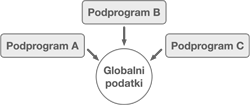
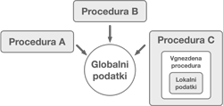
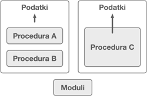
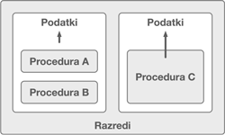

Poglavje 16 P9 Objektno usmerjena analiza, načrtovanje in modeliranje
P9
16.1 Objektno usmerjena analiza in načrtovanje
16.1.1 Objektno usmerjeno razmišljanje
Izraz objektno usmerjen (angl. object-oriented) ponavadi povezujemo s kodiranjem in razvojem programske opreme. Čeprav je to pravilno, lahko pojem objektne usmerjenosti uporabimo tudi izven vloge razvijalca. Objektno usmerjeno razmišljanje vključuje preučevanje problemov ali konceptov, njihovo razčlenitev na manjše dele in razmišljanje o njih kot objektih. Npr. kratko sporočilo na Twitterju ali izdelek v spletni trgovini bi lahko obravnavali kot predmete.
Objekti lahko vključujejo določeno podrobnosti, ki so pomembne za uporabnike. Npr. objekta Oseba ima lahko podrobnosti, kot so ime, starost, spol in poklic.
Z objekti so lahko povezana tudi vedenja (angl. behaviours) oz. odgovornosti (angl. responsibilities). Npr. Oseba lahko vsebuje vedenja, kot je sedenje ali pisanje. Elektronska naprava je lahko odgovorna za vklop ali izklop prikaza slike.
Z uporabo objektov pri predstavitvi stvari je izvorna koda programske rešitve bolje organizirana, prilagodljiva (angl. flexible) in ponovno uporabna (angl. reusable):
- Objekti ohranjajo izvorno kodo organizirano tako, da povezane podrobnosti in funkcije postavijo na različna mesta, ki jih je enostavno najti. Npr. pri prejšnjih primerih so podrobnosti o objektih povezane z objekti samimi.
- Objekti ohranjajo kodo prilagodljivo tako, da lahko podrobnosti enostavno spremenimo na modularen način znotraj objekta, brez da vplivamo na preostalo izvorno kodo. Npr. pri objektu
Osebase lahko spremenijo podrobnosti osebe, kot je npr.poklicin to ne vpliva na preostalo izvorno kodo. - Objekti omogočajo ponovno uporabo kode, saj zmanjšajo potrebno količino izvorne kode, ki jo moramo napisati in ohranjajo programe preproste.
Objekti se v produkcijskem okolju zavedajo samega sebe, npr. mobilni telefon pozna svoje specifikacije. Podobni bi pri objektno usmerjenem načrtovanju npr. Stol poznal svojo dimenzijo in lokacijo.
Pri objektno usmerjenem razmišljanju se pogosto vse koncepte (žive ali nežive) obravnava kot objekte, kjer se vsi (tudi neživi) zavedajo samega sebe.
Dober pristop k objektno usmerjenem načrtovanju je razmišljanje o svetu okoli nas v smislu objektov in lastnosti, ki jih ti objekti imajo.
16.1.2 Načrtovanje v procesu razvoja programske opreme
Pri razvoju programske opreme ponavadi sledimo določenemu razvojnemu procesu. Poenostavljeno, proces pregleda problem in predlaga rešitev, ki vključuje programsko opremo. Razvojni proces je ponavadi iterativne narave, kjer iteracije vsebujejo zajem zahtev identificiranega problema in uporaba le-teh pri izdelavi konceptualnih modelov zasnove in diagramov tehnične zasnove, ki se nato kasneje uporabijo za razvoj delujoče programske opreme, kar mora prestati tudi testiranje. Ta postopek se ponovi za vsako množico zahtev in na koncu nastane celovita rešitev začetnega problema.
Številni projekti niso uspešni, ker ne upoštevajo tega razvojnega procesa, še posebej ko se delo začne takoj s kodiranjem, medtem ko je prisotno pomanjkanje razumevanja zahtev in načrtovanja.
Pomembno je, da si pri oblikovanju zahtev in načrtovanju vzamemo čas, tudi če tega ne naredimo v celoti. Kodiranje namreč temelji na določenih predpostavkah in te predpostavke je težko spremeniti potem, ko se kodiranje že začne. Zahteve in načrt pa pomagajo pri razumevanju, katere predpostavke potrebujemo, da razvijemo ustrezno končno rešitev.
V nadaljevanju bomo na kratko pregledali korake zajema zahtev in načrtovanja pri procesu razvoja programske opreme. Ti koraki zahtevajo, da delujemo kot arhitekt, saj je potrebno razmisliti o strukturi in obnašanju programske opreme.
16.1.2.1 Zahteve
Zahteve (angl. Requirements) so pogoji oz. sposobnosti, ki morajo biti vključene v implementaciji informacijske rešitev in jih pridobimo od naročnika oz. uporabnikov. Predstavljajo izhodišče projekta, kjer moramo razumeti, kaj stranka sploh želi.
Da lahko uspešno zajamemo zahteve, moramo poznati več kot le strankino vizijo. Pridobivanje zahtev zato vključuje aktivno preiskovanje strankine vizije, pojasnjevanje tistega, kar morda ni bilo povedano, in postavljanje vprašanj o težavah, o katerih stranka morda sploh ni razmišljala. Na ta način lahko razumemo celoten obseg tega, kar želimo razviti in kaj želi stranka od programske rešitve, še predenj začnemo s kodiranjem.
Poleg določitve potreb programske rešitve, moramo razmisliti tudi o morebitnih kompromisih, ki jih bo moral naročnik sprejeti. Npr. stranka se lahko odloči, da določene funkcionalnosti ne vključi v končno rešitev, da zagotovi hitrešje delovanje, če mu je to bolj pomembno.
Da bi bolje razumeli zahteve, si lahko predstavljate, da ste arhitekt, ki gradi hišo. Zahteve vam omogočajo, da razumete želje lastnika, preden začnete graditi. Lastnik vam mogoče pove, katere sobe želi, vendar boste pri tem morali postaviti dodatna vprašanja o tem, če kakšna soba manjka, kakšne velikosti je hiša in posamezne sobe, morebitne omejitve v hiši glede mikrolokacije sob ali v katero smer naj bo hiša obrnjena. To nam pomaga pri razumevanju, kaj bomo gradili.
16.1.2.2 Načrt
Ko je začetni sklop zahtev zajet, je naslednji korak pri procesu razvoja izdelava idejne konceptualno zasnove in tehnične zasnove, kjer posledično nastaneta naslednja artefakta (angl. artifact): idejna zasnova (angl. conceptual mock-ups) in tehnični diagrami (angl. technical diagrams).
16.1.2.2.1 Idejna zasnova
Idejna zasnova nastane na osnovi začetnih zahtev in opredeli ustrezne komponente, povezave in odgovornosti programske rešitve. Tehnične podrobnosti na tem mestu še niso vključene, ampak so odložene do tehnične zasnove.
Idejna zasnova se prikaže v obliki vizualne predstavitve, ki predstavijo način, kako nameravamo izpolniti zahteve naročnika. To lahko vključuje prototipe uporabniških vmesnikov. Primer takšnega prototipa spletne strani je prikazan na sliki 16.1.
Slika 16.1: Primer prototipa uporabniškega vmesnika
Ne glede na to, ali gre za uporabniške vmesnike ali za samo programsko rešitev, lahko idejno zasnovo predstavljajo na roke narisane skice ali risbe, ki ste jih pripravili s pomočjo računalniških orodij. Izdelki idejne zasnove pomagajo naročniku in uporabnikom razjasniti načrtovalske odločitve, saj na enostaven način prikažejo predviden način delovanja končne rešitve ter omogočajo nadaljno razpravo.
Takšni prototipi ponazarjajo glavne komponente in povezave med komponentami. Ko začnete z razvojem takšnega prototipa, lažje ugotovite, katere komponente manjkajo ali morda ne delujejo. Te pomanjkljivosti potrebujejo dodatno razjasnitev s strani naročnika in morebiti dodatno načrtovanja z vidika idejne zasnove. Vsaka komponenta ima določeno nalogo, ki jo mora opraviti, kar imenuje odgovornost (angl. responsibility). Prototipi ne vsebujejo tehničnih podrobnosti, saj to ne spada v idejno zasnovo.
Npr. če se vrnemo k analognem primeru gradnje hiše. Sestavni deli arhitekturnega primera gradnje hiše lahko vključuje: parcelo, na kateri bo hiša zgrajena, hiša in prostori v njej. Povezave lahko predstavljajo način, kako so sobe medsebojno dostopne. Hiša je odgovorna za zagotavljanje dovolj energije, vode in podpore za vse komponente, ki jo sestavljajo. Prostori v hiši, kot je npr. kuhinja, imajo lahko tudi odgovornosti, kot je zagotavljanje prostora za shranjevanje kuhinjske posode, kuhinjski aparatov, zalog hrane ter električne energije in vode za pripravo obrokov. Posebnosti glede napeljave in vodovoda v idejni zasnovi niso navedene, saj ni mogoče obravnavati v celoti, dokler idejne zasnove v celoti ne razumemo. Npr. velikost električne razdelilne omare za hišo bo odvisna od seštetih potrebo po moči vsake sobe.
Najboljša praksa je oblikovanje idejne zasnove, preden nadaljujemo na tehnično zasnovo. Čimbolj jasna bo idejna zasnova, boljša bo tehnična zasnova in večja je verjetnost, da bo programska oprema izdelana ustrezno.
16.1.2.2.2 Tehnična zasnova
Tehnična zasnova temelji na idejni zasnovi in zahtevah, kjer opredelimo tehnične podrobnosti rešitve. Pri idejni zasnovi so identificirane glavne komponente in povezave ter z njimi povezane odgovornosti programske opreme, ki se razvija. Tehnična zasnova to nadgradi tako, da opiše, kako te odgovornosti dosežemo. Tehnična zasnova ni zaključena, dokler vsaka komponenta ni zaključena, kjer vsebuje dovolj podrobno specifikacijo, da jo lahko ustrezno implementiramo.
Da to dosežemo, se tehnično načrtovanje začne z razdelitvijo komponent na vse manjše komponente, ki so dovolj specifične, da jih lahko podrobno načrtujemo. Če komponente razdeljujemo na dodatne komponente, kjer ima vsaka komponenta posebne odgovornosti, pridemo do ravni, kjer lahko podrobno načrtujemo določeno komponento. Končni rezultat so določene tehnične podrobnosti vsake komponente.
Za opredelitev tehnične zasnove uporabljamo tehnične diagrame, ki na grafični način prikažejo, kako obravnavati določen problem pri vsaki komponenti, saj idejna zasnova ni dovolj specifična, da bi zajela te informacije. Obstaja veliko različnih tehničnih diagramov, ki jih lahko uporabimo za opis strukture in obnašanje komponent, ki jih bomo spoznali pri tem predmetu. Ti diagrami nam potem pomagajajo pri usklajevanju razvojnega dela.
Če nadaljujemo z našim primerom gradnje hiše in se osredotočimo na tehnično zasnovo kuhinje. Kuhinja je sama po sebi sestavni del hiše, vendar potrebuje dodatne manjše komponente, kot so npr. tla. Tehnična zasnova lahko nakazuje, da bodo morala biti tla izdelana iz materiala, ki ga je enostavno čistiti, zlasti če namerava naročnik veliko kuhati.
16.1.2.3 Kompromisi pri zahtevah in načrtovanju
V fazi načrtovanja bomo morda morali sprejeti kompromise pri zasnovi sprejemljive rešitve. Stalna komunikacija in povratne informacije so ključnega pomena pri zasnovi rešitve, ki ustreza potrebam naročnika in deluje v okviru morebitnih omejitev.
Na podlagi arhitekturnega primera gradnje hiše si lahko predstavljamo, da naročnik v svoji hiši želi odprto kuhinjo, kjer ni nobenih ovir med kuhinjo in jedilnico. Kaj pa, če sta na tem mestu potrebna steber in tram za podporo drugega nadstropja hiše? Lastnik hiše in ahitekt bosta zato morala v tej situaciji sprejeti kompromis.
Obstoječo zasnovo bo treba predelati, če se izkaže, da komponent, povezav in odgovornosti idejne zasnove v tehnični zasnovi ni mogoče izpeljati ali če ne izpolnjujejo zahtev. Ravno zato je nenehno preverjanje pri stranki, ali idejna zasnova zajema tisto, kar želi. Lažje je namreč izvesti preoblikovanje v fazi načrtovanja, kot pa v fazi kodiranja.
Večji sistemi za načrtovanje zahtevajo več časa, saj je prisotnih več komponent, povezav in odgovornosti, ki jih je treba spremljati. Ker so te komponente same po sebi velike, jih bo morda treba preoblikovati v manjše komponente, preden bo njihova zasnova dovolj podrobna.
Ko dosežemo izvedljiv načrt, postanejo tehnični diagrami osnova za izdelavo predvidene rešitve. Komponente na tej stopnji so lahko dovolj opredeljene, da postanejo množica funkcij, razredov in drugih komponent. Ti deli postanejo obvladljiv problem, ki ga razvijalci lahko individualno izvajajo.
Obstajajo številne načrtovalske tehnike, s katerimi lahko čimbolj izkoristimo proces načrtovanja in jih bomo v nadaljevanju tudi predstavili.
16.1.3 Načrtovanje z upoštevanjem kakovosti
Pri razvoju programske opreme je pomemben širši pogled na doseganje željenih zahtev. V nadaljevanju si bomo pogledali, kako je trebi pri načrtovanju upoštevati in uravnotežiti različne ideje, vloge, perspektive in potencialne kompromise.
16.1.3.1 Kompromisi
Pri načrtovanju včasih obstajajo določene omejitve, ki zahtevajo kompromis. Poleg programskih zahtev, ki temeljijo na željeni funkcionalnosti, obstajajo tudi atributi kakovosti, ki določajo, kako dobro mora funkcionalnost delovati. Odločitve pa lahko vključujejo kompromise pri različnih atributih kakovosti, kot so zmogljivost (angl. performance), udobje (angl. convenience), varnost (angl. security), in te atribute je treba uravnotežiti.
Pomembno je npr. upoštevati, kako lahko atributi kakovosti v predlagani rešitvi v različnih situacijah medsebojno tekmujejo. Ob upoštevanju tega in tehtanju glede na zahteve izdelka, se določi ustrezen kompromis. To ravnotežje je stalnica pri arhitekturi programske opreme. Arhitekti programske opreme morajo najti najboljše ravnovesje med atributi kakovosti - pogosto tako, da ocenijo, kateri je pomembnejši. Tudi časovni roki lahko vplivajo na to, kaj je sploh izvedljivo v določenem časovnem okviru.
Vzemimo npr. načrtovanje vhodnih vrat v hišo. Varnost je atribut kakovosti, ki je lahko pomemben, a če na vrata dodate preveč ključavnic, jih bo morda težko enostavno odpreti in uporaba postane neprijetna. Dober načrt mora uravnotežiti varnost s priročnostjo in zmogljivostjo.
16.1.3.2 Kontekst in posledice
Kontekst (angl. Context) zagotavlja pomembne informacije pri odločanju o ravnovesju kakovosti pri načrtovanju. Npr. programska oprema, ki hrani osebne podatke, do katerih ima dostop javnost, ima lahko drugačne varnostne zahteve kot programska oprema, ki jo uporabljajo zgolj zaposleni v podjetju. Za vzpostavitev konteksta je zato pomembna komunikacija z deležniki.
Pri načrtovanju programske opreme moramo upoštevati tudi posledice (angl. consequences). Včasih imajo načrtovalske odločitve neželjene posledice. Npr., ideja, ki se zdi primerna za majhno količino podatkov, je lahko zelo nepraktična za veliko količino podatkov.
Iskanje različnih pogledov na tehnično zasnovo je dobra praksa, saj s tem poskrbimo za bolj celovito implementacijo. To lahko dosežemo tako, da vprašamo za mnenje druge razvijalce ali izvedemo pregled načrta. Sistem je tudi smiselno preizkusiti, predenj ga v celoti razvijemo. Med postopkom načrtovanja lahko razvijemo prototipe alternativnih idej in z izvedbo testiranja ugotovimo, kaj deluje najbolje. Testi lahko pomagajo tudi pri odkrivanju neželjenih posledic. Npr. testiranje z majhnimi in velikimi količinami podatkov lahko v prejšnjem primeru razkrije to sistemsko omejitev.
16.1.3.3 Zadovoljive lastnosti kakovosti
Lastnosti kakovosti dosežemo z uresničitvijo funkcionalnih in nefunkcionalnih, ki so osnova za proces načrtovanja.
Funkcionalne zahteve (angl. Functional requirements) opisujejo, kaj se od sistema ali aplikacije pričakuje. Pravilnost (angl. correctness) je ključna kakovost, ki jo moramo doseči z izpolnitvijo funkcionalnih zahtev. Npr. če načrtujemo glasbeno aplikacijo, mora imeti aplikacija možnost prenašanja in predvajanja glasbe. Načrt mora opisati rešitev, ki pravilno izpolnjuje to zahtevo.
Nefunkcionalne zahteve (angl. Non-functional requirements) določajo, kako dobro sistem oz. aplikacija izvaja svoje delo. Nefunkcionalne zahteve lahko vključujejo zmogljivost (angl. performance), uporabo virov (angl. resource usage) in učinkovitost (angl. efficiency); kar lahko tudi izmerimo v delujoči aplikaciji. Nefunkcionalne zahteve glasbene aplikacije lahko določajo prenos glasbe samo do določene omejitve pomnilnika. Druge lastnosti, povezane z nefunkcionalnimi zahtevami programske opreme, so ponovna uporaba (angl. reusability), prilagodljivost (angl. flexibility) in vzdrževalnost (angl. maintainability). Ti vidiki pomagajo pri razumevanju potencialnega nadaljnjega razvoja programske opreme in omogočanje prihodnjih sprememb.
Zahteve so sprva pogosto nepopolne in jih kasneje razrešimo s pomočjo interakcije z naročnikom in končnimi uporabniki.
Izpolnjevanje funkcionalnih in nefunkcionalnih zahtev je pomembno, vendar lahko obstaja še tudi druge pomembne omejitve, ki pripeljejo do kompromisov. Zaradi je zelo pomembna komunikacija in določitev, kaj je še sprejemljivo za deležnike. Če si pogledamo primer, kjer vsi avtomobili izpolnjujejo funkcionalno zahtevo zagotavljanja prevoza, vendar pa lahko nefunkcionalne zahteve in poudarek na določenih lastnostih kakovosti močno spremeni končni izdelek - različni pospeški, vodljivost, teža in poraba goriva lahko naredijo razliko med enoprostorcem in športnim avtomobilom.
Pri preverjanju zahtevanih lastnosti kakovosti načrta in implementacije moramo uporabljati preglede in testiranje. Nekatere lastnosti lahko potrdimo tudi s povratnimi informacijami od končnih uporabnikov.
V nadaljevanju navajamo nekaj pogostih kompromisov v zvezi s kakovostjo pri načrtovanju programske opreme:
- Zmogljivost (angl. performance) in vzdrževalnost (angl. maintainability), kjer je visoko zmogljivo izvorna koda morda manj razumljiva in modularna, kar posledično povzroča težje vzdrževanje. Druga možnost je, da dodatno razvita izvorna koda za zagotavljanje združljivosti s prejšnjimi verzijami vpliva na zmogljivost in vzdržljivost.
- Zmogljivost (angl. performance) in varnost (angl. security), kjer lahko dodatni stroški za visoko stopnjo varnostjo zmanjšajo zmogljivost.
16.1.3.4 Kompromisi
Pri načrtovanju programske opreme je poleg uravnoteženja lastnosti kakovosti in izpolnjevanja funkcionalnih zahtev pomembno upoštevati več perspektiv. Programska oprema mora tako zadovoljiti lastnosti, ki so pomembne za uporabnike kot tudi za razvijalce. To pomeni, da organizacijska struktura programske opreme lahko vpliva na kakovost delovanja, kot jo razumejo uporabniki in na kakovost ponovne uporabe in vzdrževalnosti, kot to razumejo razvijalci.
Pri načrtovanju moramo ravnovesje med lastnostmi kakovosti razumeti in tudi upoštevati. Pri tem je pomembno prioritiziranje in razumevanje, katere lastnosti dejansko potrebujemo. Dobro vprašanje pri ugotavljanju potencialnih kompromisov, ki jih bomo morali sprejeti, je, ali obstaja način, da zmanjšamo določeno lastnost kakovosti z namenom da dosežemo ravnotežje z drugo.
Opomba: Pri načrtovanju programske opreme moramo predvsem upoštevati naslednje lastnosti kakovosti: zmogljivost (angl. performance), vzdrževalnost (angl. maintainability), varnost (angl. security) in združljivost s prejšnjimi verzijami (angl. backwards compatibility).
Prav tako je pomembno upoštevanje omejitve z vidika realne izvedbe projekta. Pri razvoju projekta je treba namreč uravnotežiti razpoložljive vire, stroške, čas in delovno silo.
16.1.4 Razred, odgovornost, sodelovanje
Do tega trenutka smo si pogledali postopek pridobivanja zahtev in uporabo idejne zasnove pri zbiranju začetnih idej o tem, kako izpolniti zahteve pri razvoju programske opreme. V tej fazi se vzpostavijo komponente, povezave in odgovornosti nekaterih zahtev.
Preučevali smo tudi, kako komponente in povezave, v procesu tehnične zasnove z upoštevanjem lastnosti kakovosti, dopolnimo s tehničnimi podrobnostmi. To nam kasneje olajša implementacijo komponent in povezav.
V nadaljevanju pa si bomo pogledali pomembno tehniko, ki nam pomaga pri predstavitvi komponent, odgovornosti in povezav pri oblikovanju idejne zasnove na visoki ravni. Ta tehnika se imenuje kartice razredov, odgovornosti in sodelovanja (angl. Class, Responsibility, Collaborator (CRC) cards). Kartice CRC pomagajo pri zajemu in organizaciji komponent v razrede, prepoznavanju odgovornosti komponent in določanju njihovega medsebojnega sodelovanja. Zato tudi pomagajo pri izboljšavi komponent v okviru zasnove programske opreme.
16.1.4.1 Kartice CRC
Med procesom idejne zasnove je komponente, poleg identifikacije komponent, odgovornosti in povezav, smiselno tudi predstaviti. Ena izmed tehnik je uporaba kartic razredov, odgovornosti in sodelovanja (CRC).
Kartice CRC se uporabljajo za zajem, organizacijo in izboljšanje komponent sistemskega načrta. Takšne kartice vsebujejo tri dele: na vrhu kartice je ime razreda (angl. class name), na levi strani kartice je odgovornost razreda (angl. class responsibilities) in na desni sodelavci (angl. collaborators). Tabela 16.1 prikazuje primer takšne kartice, ki je po velikosti podobna bančni kartici.
| Odgovornosti (angl. Responsibilities) | Sodelavci (angl. Collaborators) |
Če želimo zajeti kandidata za komponento s pomočjo kartice CRC, postavimo ime komponente v razdelek z imenom razreda in odgovornosti v razdelek z odgovornostmi. Povezave so zajete v razdelku s sodelavci. Povezave ali sodelovci označujejo druge razrede, s katerimi razred, ki je zapisan v razdelku imena razreda, sodeluje pri izpolnjevanju svojih odgovornosti. Ti koraki se nato iterativno ponavljajo in pri tem nastajajo nove kartice, dokler ne identificiramo vseh razredov, odgovornosti in sodelavcev sistema.
Pri načrtovanju sistema se kartice CRC uporabljajo z namenom, da prisilijo načrtovalce k nadaljnjemu razčlenjevanju komponent na manjše komponente in razrede, da jih je mogoče posamično opisati na kartici.
16.1.4.2 Izdelava prototipov in simulacija
Uporaba kartic CRC je preprost pristop, ki ima številne prednosti. Je poceni, kartice lahko urejamo in pristop je široko dostopen. Kartice CRC nam pomagajo predvsem pri razvrščanju informacij v obvladljive dele.
Ključna prednost uporaba kartic CRC je možnost fizične reorganizacije načrta. Glede na to, da je vsaka komponenta predstavljena s kartico, lahko povezane kartice premaknemo skupaj. To nam omogoča, da raziščemo, kako bo sistem deloval in pri tem ugotovimo morebitne pomanjkljivosti načrta.
Eksperimentiramo lahko tudi s premikanjem kartic v različnih vrstnih redih in analiziramo posledice, kar nam omogoča pregled alternativnih predlogov načrta. To pomeni, da se lahko kartice CRC pri idejni zasnovi uporabijo tudi za prototipiranje in simulacijo sistema.
Modele pri načrtovanju včasih poimenujemo tudi modeli CRC. Kartice CRC je treba organizirati tako, da združimo komponente, ki testno sodelujejo. To olajša razumevanje odnosov ali povezave med razredi oz. komponentami.
Kartice CRC so zelo primerno orodje za sestanke skupine za razvoj programske opreme. Vse kartice lahko postavimo na mizo in omogočimo razpravo ali simulacijo z razvojno ekipo, kjer ugotavljamo, kako razredi sodelujejo z drugimi razredi pri doseganju lastnih odgovornosti. To nam omogoča, da sistem predstavimo vizualno in pridobimo povratno informacijo ostalih sodelujočih.
Kartice CRC imajo največjo dodano vrednosti pri izdelavi prototipov in simulacij v okviru idejnega načrta. Na voljo pa so tudi drugi načrtovalski pristopi, ki jih bomo spoznali v nadaljevanju.
16.2 Objektno usmerjeno načrtovanje
Predhodno poglavje 16.1.1 je bilo namenjeno predstavitvi pomena načrtovanja pri procesu razvoja programske opreme in se je končalo s povzetkom prednosti uporabe kartic CRC za določitev idejne zasnove.
To poglavje bo bolj podrobno predstavilo objektno usmerjeno načrtovanje. Začelo se bo s predstavitvijo problemov načrtovanja in kakšen je bil razvoj programskih jezikov v smeri objektne usmerjenosti. Nato bomo predstavili štiri glavna načrtovalska načela: abstrakcijo, ovijanje, razgradnjo in posploševanje. Ta načela pomagajo pri reševanju problemov in vodijo k razvoju prilagodljive programske opreme, ki jo lahko ponovno uporabimo in jo je enostavno vzdrževati. To so tudi ključna načela, ki jih moramo upoštevati pri razvoju dobrega načrta programske opreme.
Predstavili bomo tudi kako načrtovalsko strukturo predstavimo v obliki izvorne kode programskega jezika Java in UML razrednih diagramov z uporabo prej omenjenih načel. Nazadnje bo predstavljena tudi implementacija in dedovanje vmesnikov v okviru načrtovalskega načela posploševanja.
16.2.1 Izdelava modelov načrta
Ko delamo na projektu razvoja programske opreme, je ključna, da ne začnemo takoj s pisanjem izvorne kode, kot začetni poskus reševanja težave. Namesto tega je pri izdelavi ustrezne rešitve pomembno razumevanje vseh zahtev in uporaba dobrega načrta.
Korak načrtovanje se nahaja med razumevanjem zahtev in izdelavo končne rešitve. Iterativno se ukvarja tako s področjem problema kot tudi rešitve. Načrt mora predstavljati in opisovati koncepte na način, da ga razumejo uporabniki in razvijalci, saj mora omogočati razpravo z uporabo skupnih izrazov.
Načrt je pomemben korak pri razvoju programske opreme in sčasoma so nastali števili pristopi, ki ta proces olajšajo. Npr. nekatere načrtovalske strategije in programski jeziki so nastali za rešitev posebnih vrst težav.
Eden od pristopov, ki olajša proces načrtovanja, je tudi objektno usmerjen pristop. Le-ta omogoča opis konceptov iz problemskega področja in rešitev z objekti, ki predstavljajo pojme, razumljive uporabnikom in razvijalcem. To skupno razumevanje omogoča uporabnikom in razvijalcem razpravo o elementih zapletenih problemov. Objektno usmerjen razvoj z objektno usmerjenimi programski jeziki je zato priljubljen pristop pri reševanju kompleksnih problemov.
Dober načrt ne naredi neposrednega preskoka iz koncepta v problemskem prostoru na obravnavo tega v prostoru rešitev, kar velja tudi za objektno usmerjeno načrtovanje. Kot smo že predstavili v poglavju 16.1.2.2, je objektno usmerjeno načrtovanje sestavljeno iz:
- idejne zasnove (angl. conceptual design) z uporabo objektno usmerjene analize (angl. object-oriented analysis) pri prepoznavanju ključnih objektov in razčlenitvi problema na obvladljive dele,
- tehnične zasnove (angl. technical design) z uporabo objektno usmerjenega načrtovanja (angl. object-oriented design) pri nadaljnji opredelitvi podrobnosti objektov, vključno z njihovimi atributi in vedenjem, tako da je razvijalcem razumljivo, kaj morajo implementirati, da nastane delujoča programske rešitev.
Te načrtovalske aktivnosti se izvajajo nenehno in se ponavljajo.
Cilj načrtovanja programske opreme je izdelava in izboljšava modelov vseh objektov programske opreme, kjer so kategorije teh objektov naslednje:
- entitetni objekti (angl. entity objects), kjer je začetni fokus pri načrtovanju v problemskem prostoru,
- kontrolni objekti (angl. control objects), ki sprejemajo dogodke in usklajujejo akcije, ko se proces premika v prostor rešitve,
- mejni objekti (angl. boundary objects), ki povezujejo zunanje storitve s sistemom, ko se proces premika proti prostoru rešitve.
Programski modeli pomagajo pri razumevanju in organizacija procesa načrtovanja objektov. Pri kompleksnih problemih uporabljamo načrtovalska načela in smernice: poenostavitev objektov modela in razdelitev na manjše dele ter iskanje skupnih točk, ki jih lahko dosledno obravnavamo. Modele je treba nenehno vrednotiti, da se zagotovi ustrezna obravnava prvotnega problema in da zadovoljimo vse lastnosti kakovosti, kot je možnost ponovne uporabe, prilagodljivost in vzdrževalnost. Modeli se uporabljajo tudi kot projektna dokumentacija programske opreme. Modele pogosto tudi preslikamo v skelet izvorne kode, še posebej pri objektno usmerjenih jezikih, kot je npr. Java.
Modele programske opreme pogosto zapišemo v obliki vizualne notacije standardnega jezika za modeliranje računalniških sistemov (angl. Unified Modelling Language (UML)). Jezik UML ima na voljo različne vrste modelov oz. diagramov UML, ki jih lahko uporabimo, ko se osredotočamo na različne vidike programske opreme. Npr. strukturni model lahko uporabimo za opis, kaj objekti počnejo in kako so povezani, kar je analogno maketi stavbe, ki se uporablja v arhitekturi.
16.2.2 Razvoj programskih jezikov
Jezik je beseda, ki jo uporabljamo za opis sistema za medsebojno komuniciranje. Pisanje, branje, govorjenje, risanje in kretnje so del jezika. Jeziki se morajo nenehno razvijati, da ostanejo živi in jih ljudje uporabljajo.
Programski jeziki pri tem niso nobena izjema in tako kot tradicionalni jeziki so se skozi čas razvijali. Pogosto so se programski jeziki razvili, da bi ponudili (učinkovitejše) rešitve za težave, ki jih trenutni programski jeziki ne morejo. Za obravnavo novih podatkovnih struktur se lahko npr. tudi pojavijo novi jeziki oz. ideje. Ideje, uporabljene v programskih jezikih, so povzročile tudi večje premike paradigmah programiranja (angl. programming paradigms).
Zato je pomembno poznavanje zgodovine paradigm programiranja. Kot razvijalec programske opreme lahko še vedno naletite na sisteme, ki uporabljajo starejše jezike in načrtovalske paradigme. Čeprav je objektno usmerjeno programiranje zelo močno orodje, lahko obstajajo določeni problemi, ki jih bolje ali učinkoviteje rešiti z drugo paradigmo. Zato je tudi pomembno razumevanje zgodovine, saj novi jeziki morda ne bodo vpeljali novih struktur, ampak le spremenili obstoječe. Nekateri stari načini dela in stare paradigme so lahko tako razširjene, da je nove strukture težko prepoznati. In pri tem nam pomaga poznavanje zgodovine.
Tabela 16.2 povzema glavne paradigme programiranja v zgodovini programskih jezikov.
| Programski jezik | Časovno obdobje | Rešitve, ki jih ponuja programski jezik | Nerešena vprašanja programskega jezika |
|---|---|---|---|
| COBOL, Fortran | 1960 |
COBOL in Fortran sta sledila imperativni paradigmi (angl. imperative paradigm), kjer so večji programi razdeljeni na manjše dele, imenovane podprogrami. Ker je bila računalniška obdelava draga, je bilo pomembno povečanje zmogljivosti obdelave. Za rešitev tega problema so se uporabili globalni podatki (angl. global data), tako da so bili le-ti na voljo na enem mestu v pomnilniku računalnika in so bili programu dostopni kjerkoli. To je pomenilo, da so morali podprogrami za dostop do spremenljik le na eno mesto.  |
Ob spremembi podatkov se lahko zgodi, da podprogrami dostopajo do globalnih podatkov, ki niso takšni, kot pričakujejo. Da bi se temu izognili, potrebujemo boljše upravljanje s podatki. |
| Algol 68, Pascal | zgodnja 1970 |
V obdobju 1960 so se uporabljali globalni podatki, vendar lahko poljubne spremembe podatkov povzročijo težave za podprograme. Rešitev predstavlja vpeljava obsega (angl. scope) in lokalnih spremenljivk (angl. local variables) - podprogrami oz. procedure so lahko imeli vsaka svoje spremenljivke.  Ti jeziki podpirajo uporabo abstraktnega podatkovnega tipa (angl. abstract data type), ki ga določi programer in ni prvotno del programskega jezika. Gre za skupino povezanih informacij, ki so označeni s tipom (angl. type). Ker so podatki združeni in posredovani v različne procedure z uporabo podatkovnih tipov, to pomeni, da je procedura edina, ki lahko spreminja del podatkov. Ni nam več treba skrbeti, da bi podatke spreminjala kakšna druga procedura. |
Proti sredini 1970 je računalniška obdelava postala cenejša. Hkrati je človeško delo postalo dražje in na ta način predstavljajo ozko grlo pri razvoju programske opreme. Napredek pri računalniški obdelavi je omogočil, da so računalniki začeli z obdelavo bolj zahtevnih problemov. To pa je tudi pomenilo, da se je programska oprema hitro povečala in vzdrževanje ene datoteke je bilo zelo zahtevno. |
| C, Modula-2 | sredina 1970 |
Do sredine 1970 so računalniški postali hitrejši in so bili sposobni obdelati bolj kompleksne probleme. Vendar je to pomenilo, da so starejši programi hitro postali preveliki za vzdrževanje. To je vodilo do novih jezikov, ki so omogočali organizacijo programov v ločenih datotekah, tako da so lahko razvijalci bolj enostavno uporabili več enoličnih kopij abstraktnih podatkovnih tipov.
 V programskem jeziku C je npr. vsaka datoteka vsebovala vse povezane podatke in funkcije, ki so z njimi manipulirale. Deklaracija do česa je mogoče dostopati, je bilo opredeljeno v naslovni datoteki (angl. header file). |
Dedovanje abstraktnih tipov v teh jezikih ni enostavno izvedljivo. To pomeni, da smo lahko opredelili številne podatkovne tipe, vendar ni bilo mogoče zahtevati, da je en tip razširitev drugega. |
| Objektno usmerjeni programski jeziki (Java, C++, C# idr.) | od 1980 do sedaj |
Čeprav je bilo programe lažje upravljati preko abstraktnih tipov, še vedno ni bilo možnosti dedovanja le-teh. Koncepti objektno usmerjenega načrtovanja so zato postali priljubljeni načini rešitve te težave. Cilji objektno usmerjenega načrtovanja:
 V tej paradigmi so sistemi lahko zgrajeni iz popolnoma abstraktnih podatkovnih tipov. Sistemu to omogoča posnemanje strukture problema - sistem lahko natančneje predstavlja objekte resničnega sveta. Datoteke z definicijo razreda v objektno usmerjenem programiranju nadomeščajo datoteke v C in Modula-2. Vsak razred definira tip s povezanimi podatki in funkcijami (metodami). Razred deluje kot tovarna, ki izdeluje posamezne objekte določene vrste. To omogoča, da se podatki razdelijo v lastne ločene razrede. |
Objektno usmerjeno programiranje je sedaj prevladujoča paradigma programiranja. |
16.2.3 Štiri načrtovalska načela
Objektno usmerjeno načrtovanje omogoča pripravo modelov, kjer za predstavitev sistema uporabimo objekte. Če želimo razviti objektno usmerjen program, je treba poznati ključna načrtovalska načela takšnih programov. Štiri najpomembnejša načela so: abstrakcija (angl. abstraction), ovijanje (angl. encapsulation), razgradnja (angl. decomposition) in posploševanje (angl. generalization).
16.2.3.1 Abstrakcija
Abstrakcija (angl. Abstraction) je eden glavnih načinov, kako se ljudje spopadamo s kompleksnostjo. Gre za idejo poenostavitve koncepta v problemski domeni. Abstrakcija razdeli koncept na poenostavljen opis, ki ignorira nepomembne podrobnosti in v nekem kontekstu poudari bistvene elemente, potrebne za ta koncept.
Abstrakcija mora slediti pravilu najmanjšega presenečenja (angl. rule of least astonishment). To pravilo nakazuje, da morajo biti ključni atributi in vedenja zajeta brez presenečenj ter ni definicij, ki presegajo zahtevan obseg. S tem preprečimo, da bi nepomembne lastnosti postale del abstrakcije, in zagotavlja, da je abstrakcija smiselna.
Elementi programa so funkcije, razredi, naštevanja in metode. Pri objektno usmerjenem načrtovanju se abstrakcija najbolj neposredno nanaša na pojem razreda. Če za določanje bistvenih podrobnosti koncepta uporabimo abstrakcijo, so te podrobnosti definirane v razredu. Vsak objekt, ki ga kreiramo iz razreda, ima bistvene podrobnosti, ki predstavljajo primerek nekega koncepta, lahko pa ima poleg tega tudi nekaj individualnih lasnosti. Poglejmo primer modelčka za piškote, ki se uporablja za medenjake. Vsa primerek piškota spada v razred medenjakov in ima enake ključne lastnosti, kot so glava, roke in noge, tudi če so potem okrašeni drugače.
Pri oblikovanju abstrakcije je ključen kontekst oz. določena perspektiva, saj lahko kontekst spremeni bistvene lastnosti koncepta. Npr. če pogledamo bistvene lastnosti koncepta oseba. To lahko težko razumemo, če nimamo konteksta, saj je ta koncept nejasen, ker ne poznamo namena osebe. V računalniški igri bi bile bistvene lastnosti osebe v kontekstu igralca. Po drugi strani pa bi bile v aplikaciji za športno vadbo lastnosti osebe v kontekstu športnika. Naloga načrtovalca je, da izbere ustrrzen kontekst razvoja programske opreme in ta kontekst je treba razumeti, preden se lotimo abstrakcije.
Bistvene lastnosti abstrakcije si lahko predstavljamo na dva načina: prreko osnovnih atributov in preko osnovnih vedenj oz. odgovornosti.
Osnovni atributi so lastnosti, ki sčasoma ne izginejo. Čeprave se lahko njihove vrednosti spremenijo, se atributi sami ne. Npr. koncept živali leva ima lahko atribut starost. Ta vrednost se lahko spreminja, vendar bo imel lev vedno atribut starosti.
Poleg osnovnih atributov abstrakcija opisuje tudi osnovno vedenje koncepta. Lev ima lahko vedenje, kot je lov, prehranjevanje in spanje. To so tudi odgovornosti, ki jih abstrakcija leva opravlja za namen življenja.
Abstrakcija bi torej morala opredeliti le bistvene lastnosti in vedenje koncepta. Kontekst nam pomaga določiti, kaj je dejansko pomembno. Npr. ko razmišljamo o levu v lovskem okolju, ni potrebno upoštevati, v kakšnem položaju lev najraje spi. Če se kontekst spremeni, se lahko spremeni tudi abstrakcija.
Načelo abstrakcije prinaša številne prednosti. Pomaga nam poenostaviti zasnovo razredov, tako da je le-ta bolj osredotočena, jedrnata in razumljiva ostalim, ki jo obravnavajo. Ker so abstrakcije močno odvisne od konteksta oz. perpsektive, je pomemben natančen razmislek, kaj je pomembno. Če se npr. spremeni namen sistema, ki ga gradimo, ali če se spremeni problem, ki ga rešujemo, moramo ponovno pregledati abstrakcije in jih ustrezno posodobiti.
16.2.3.2 Ovijanje
Ovijanje (angl. Encapsulation) predstavlja koncept, ki določa, da so v kapsuli elementi, do katerih lahko dostopate od zunaj ter določeni elementi, do katerih ne morete.
Z ovijanjem so povezane naslednje ideje:
- sposobnost združevanja vrednosti atributov (ali podatkov) in vedenj (ali funkcij), ki s temi vrednostmi manipulirajo, v samostojen objekt,
- sposobnost razkritja določenih podatkov ali funkcij tega objekta, do katerih lahko dostopamo iz drugih objektov, običajno preko vmesnika (angl. interface),
- sposobnost omejitve dostopa do določenih podatkov in funkcij samo znotraj objekta.
Združevanje se pojavi naravno, ko razred definiramo za tip objekta. Načelo abstrakcije nam pomaga določiti, kateri atributi in vedenja so pomembni za koncept v določenem kontekstu. Z načelom ovijanja naredimo še korak naprej, saj zagotavlja, da so lastnosti združene v istem razredu.
Ovijanje nam omogoča, da imajo različni objekti, ki so nastali iz določenega razreda, lastne vrednosti podatkov posameznih atributov in posledično izkazujejo delovanje. To močno olajša programiranje, saj se podatki in koda, ki manipulira s temi podatki, nahajajo na istem mestu.
Podatki o objektu morajo vključevati samo tisto, kar je za objekt pomembno. Npr. objekt lev “ve”, kakšne živali lev lovi, ne ve pa, katere živali živijo na drugem kontinentu, ker to ni pomemben podatke. Razred torej ve le, kateri atributi oz. podatki so zanj pomembni.
Razred prav tako opredeli vedenje preko metod. Metode manipulirajo z vrednostmi atributov ali podatki v objektu, da dosežejo dejansko delovanje. Določene metode lahko izpostavimo oz. jih naredimo dostopne objektom drugih razredov. To zagotavlja vmesnik drugim objektom pri uporabi tega razreda.
16.2.3.2.1 Celovitost in varnost
Ker je ena od idej ovijanja omejevanje dostopa do določenih podatkov in funkcij na le notranjost objekta, to seveda povezuje ovijanje s celovitostjo podatkov in varnostjo občutljivih podatkov.
Če je zunanji dostop do določenih atributov in metod omejen, in omogoče zgolj preko posebnih metod, podatkov ni mogoče spremeniti z dodelitvijo vrednosti spremenljivkam. To preprečuje kršitev odvisnosti podatkov v objektu.
Podobna omejitev dostopa preprečuje tudi razkritje občutljivih informacij, tudi pri poizvedbah, ki se zanašajo na občutljive podatke.
16.2.3.2.2 Sprememba implementacije
Ovijanje je tudi uporabno načelo za izvajanje sprememb programske opreme. Ker je zmožnost razkrivanja podatkov ločena od množice atributov, to pomeni, da se lahko implementacija atributov in metod spremeni, vmesnik za dostop do razreda pa ostane enak. Uporabnikom, ki dostopajo do razreda ali povprašujejo po njem, ni treba skrbeti, kako implementacija za vmesnikom deluje - še vedno bodo uporabljali isti način za dostop do informacij.
16.2.3.2.3 Črna škatla
Idejo ovijanja, ki podpira spremembo implementacije, si lahko predstavljamo kot črno škatlo (angl. black box). Nobenemu drugemu razredu ni treba poznati podrobnosti izvajanja znotraj razreda, če lahko dostopajo do vmesnika. Razred je torej kot črna škatla, kjer ne vidimo podrobnosti o načinu predstavitve atributov oz. kako metode izračunajo rezultate. Kaj se zgodi v škatli, da se doseže določeno vedenje, ni pomembno, dokler lahko zagotovimo vhode in pridobimo izhode s klici metod.
Ovijanje preseže abstrakcijsko oviro z uporabo ideje črne škatle, kjer notranje delovanje ni pomembno za zunanje okolje. Posledica tega je abstrakcija, ki uporabnikom razreda zmanjša kompleknost.
Ovijanje, zaradi ideje črne škatle, prav tako poveča možnost ponovne uporabe. Drug razred mora, za dosego določenega vedenja, poznati zgolj pravo metodo za klic, argumente, ki jih mora podati na vhodu in kaj pričakuje na izhodu. Enkapsulacija tako programsko opremo ohrranja modularno in enostavno za uporabo. Razrede uporablja na preprost način, saj njihovo notranje vedenje ni pomembno za druge razrede, če le obstaja vmesnik, ki jih povezuje.
16.2.3.3 Razgradnja
Razgradnja (angl. Decomposition) temelji na ideji, kjer vzamemo celoto in jo razdelimo na več delov. Drug pogled na razgradnjo pa lahko tudi pomeni, da vzamemo posamezne dele z različnimi funkcionalnostmi in jih združimo v celoto. Razgradnja omogoča, da se problemi razdelijo na manjše dele, ki jih je lažje razumeti in rešiti.
Pri razgradnji najprej preučimo različne odgovornosti celote in ocenimo, kako bi lahko celoto razdelili na dele, od katerih bi imel vsak svojo odgovornost. Vsak od teh delov je dejansko ločen objekt, ki ga lahko kreiramo iz ločenih razredov v našem načrtu. Na ta način je razgradnja podobna abstrakciji, kjer delimo celoto na objekte z bistvenimi lastnostmi.
Vsak drugačen del v okviru celote lahko zajamemo v razredu, tako da lahko dele ohranimo bolje organizirane in ovite. Razred za celoten objekt se nato nanaša na razrede za objekte, ki ga sestavljajo.
16.2.3.3.1 Narava delov
Celota ima lahko določeno ali dinamično število delov posamezne vrste. Če obstaja določeno število, bo imel celoten predmet v življenjski dobi točno določeno delov. Npr. primer pečice s štirimi gorilniki, kjer je število gorilnikov določeno za objekt pečice. Po drugi strani pa imamo lahko dinamično število delov. To pomeni, da lahko celoten objekt v svoji življenjski dobi pridobi nove primerke teh delnih objektov. Npr. hrana znotraj objekta hladilnika - le-ta se lahko spreminja dnevno.
Upoštevati tudi moramo, da lahko del služi tudi kot celota, ki je nadaljnje sestavljena. Npr. kuhinja je del hiše, kjer pa lahko tudi kuhinjo sestavljata npr. pečica in hladilnik.
Pri razgradnji je potrebno omeniti tudi življenjsko dobo, ki jo imajo celi in delni objekti. Včasih so te življenjske dobe tesno povezane, kjer ima del isto življenjsko dobo kot celoto - eno ne more obstajati brez drugega. Če npr. merilnik temperature pri hladilnik preneha z delovanjem, bo tudi hladilnik prenehal delovati. V drugem primeru pa, če se določena hrana v hladilniku pokvari, bo hladilnik še vedno deloval naprej.
Celote lahko vsebujejo tudi dele, ki si jih hkrati delijo z drugo celoto. Včasih pa tudi delitev ni mogoča ali načrtovana.
16.2.3.4 Posploševanje
Posploševanje (angl. Generalization) nam pomaga zmanjšati redundanco pri reševanju problemov. To je splošno načelo, ki se uporablja v mnogih disciplinah tudi zunaj razvoja programske opreme.
Pri kodiranju algoritmično vedenje pogosto modeliramo z metodami, ki omogočajo programerju posplošitev vedenja, tako da se lahko vedenje uporabi za različne vhodne podatke. Ta splošnost v okviru celotnega programa zmanjšuje potrebo po enaki kodi.
Pri objektno usmerjenem načrtovanju je generalizacija glavno načelo načrtovanja, vendar poleg uporabe metod, ki jih lahko uporabimo za različne podatke, objektno usmerjeno načrtovanje posplošitev doseže tudi s pomočjo dedovanja (angl. inheritance).
To je mogoče z uporabo dveh vrst razredov: nadrejeni razred (angl. parent class) in podrejeni razred (angl. child class). Podrejeni razredi podedujejo atribute in vedenje nadrejenih razredov. To pomeni, da gredo ponavljajoče, skupne lastnosti v nadrejene razrede. Nadrejeni razredi opredeljujejo splošne ideje in imajo na splošno širšo uporabo.
Možno je tudi, da več podrejenih razredov deduje od enega nadrejenega razreda. Vsi ti razredi prejmejo skupne atribute in vedenje, čeprav je verjetno, da bo imel vsak podrejeni razred dodatne atribute in vedenja, ki jim bodo omogočili večjo specializacijo za to, kar počnejo.
V standardni terminologiji je nadrejeni razred znan kot nadrazred (angl. superclass), podrejeni razred pa podrazred (angl. subclass). Dedovanje tako omogoča nadrazredu, da tvori posplošitev in da so njegovi podrazredi bolj specializirani.
Nadrazredi prihranijo čas in preprečijo napake, zlasti če se uporabijo za več podrejenih razredov. Brez nadrejenih razredo sistemi niso prilagodljivi, ponovno uporabni oz. jih je težje vzdrževati.
Opomba: Čeprav lahko razrede poimenuje poljubno, je dobra praksa pri poimenovanju nadrazredov in podrazredo takšna, da jih poimenujemo po stvareh, ki jih želimo modelirati, saj to olajša razumevanje kode.
Posploševanje je velika dodana vrednost objektno usmerjenega načrtovanja. Ker podrazredi podedujejo atribute in vedenja nadrazredov, to pomeni, da je treba vse spremembe kode, ki je skupna obema podrazredoma, narediti zgolj enkrat v nadrazredu. To pomeni, da je spremembe programske opreme lažje izvajati in vzdrževati. Druga prednost je enostavno dodajanja podrazredov, brez da bi morali znova ustvari vse skupne atribute in vedenja zanje, zato je programsko opremo tudi lažje razširiti. Posploševanje zagotavlja robustnejšo programsko rešitev in omgoča večji delež izvorne kode, ki jo lahko ponovno uporabimo, ker lahko iste dele kode uporabimo za različne razrede.
Opomba: Obe metodi in dedovanje ponazarjata načrtovalsko načelo preko pravila “ne ponavljaj se” (angl. Don’t Repeat Yourself (D.R.Y.)). Metode in dedovanje omogoča razvijalcem ponovno uporabo kode, kar posledično prinaša manj kode in na splošno manj ponavljanja.
16.2.4 Načrtovalska struktura v programskem jeziku Java in UML razrednih diagramih
Proces načrtovanja je sestavljen iz idejne in tehnične zasnove. Idejna zasnova, vključno z izdelavo prototipov in simulacijami idej na višji ravni je izvedljiva s pomočjo kartic CRC. Kartice CRC olajšajo komunikacijo z naročnikom in razvojni ekipi omogočajo kreiranje načrtov, brez da bi se ukvarjali z izvorno kodo. Vendar pa je pri tehnični zasnovi potrebno bolj napredna tehnika, s katero lahko razvijalcem jasno sporočimo potrebe. Ena od takšnih tehnik, ki se uporablja za tehnično načrtovanje, je UML razredni diagram (angl. UML Class Diagram) oz. preprosto razredni diagram. Ti diagrami zagotavljajo več podrobnosti kot kartice CRC in omogočajo lažjo pretvorbo v razrede pri implementaciji.
V nadaljevanju bomo pogledali, kako lahko z UML razrednimi diagrami in programskim jezikom Java obvladujemo ključna načrtovalska načela: abstrakcija, ovijanje, razgradnja in posploševanje.
16.2.4.1 Abstrakcija
Načrtovalsko načelo abstrakcije omogoča poenostavitev koncepta na njegove bistvene elemente v določenem kontekstu. Abstrakcijo lahko uporabimo na ravni načrtovanja z uporabo UML razrednih diagramov, kjer se načrt na koncu spremeni v kodo.
Kartice CRC pri načrtovanju sistemov zajamejo komponente, ki jih lahko sčasoma izboljšamo v funkcije, razrede ali zbirke drugih komponent.
Poglejmo si na primeru, kako se kartica CRC preslika v razredni diagram. V tabeli 16.3 je primer kartice CRC, ki predstavlja povzetek živila v kontekstu trgovine z živili.
|
Poznavanje ID-ja živila Poznavanje imena Poznavanje proizvajalca Poznavanja datuma poteka Poznavanje cene Preverjanje, če je znižana cena |
Na sliki 16.2 je isti koncept predstavljen v obliki razrednega diagrama.
Slika 16.2: Razredni diagram za živila PlantUML
Vsak koncept ali razred v razrednem diagramu je predstavljen s pravokotnikom, kot je prikazano na sliki 16.3, kjer so trije razdelki:
ime razreda je enako imenu razreda v programskem jeziku Java,
razdelek z atributi predstavlja spremenljivke v programskem jeziku Java in opredeljuje atribute abstrakcije z uporabo standardne predloge za ime spremenljivke in njenim tipom (razred ali osnovni),
<ime spremenljivke>: <tip spremenljivke>razdelek z operacijami je enakovreden metodam v programskem jeziku Java in opredeljuje vedenje abstrakcije z uporabo standardne predloge.
<ime> ( <seznam parametrov> ) : <tip odgovora>
Slika 16.3: Razredni diagram za živila PlantUML
V primeru na sliki 16.2 imamo na voljo vedenje, kjer živila vračajo podatke ali obstaja znižana cena. Ta metoda se imenuje jeZnizanaCena in vrača logično vrednost boolean, če je na voljo akcijska cena. Omenjena metoda ne vsebuje nobenega parametra, zato le-ta tudi ni vključen.
Če bi dodali parameter, npr. datum, bi sledili predlogi abstrakcije in metodo bi zapisali v obliki jeZnizanaCena(datum: Date) : boolean.
Opazimo lahko, da razredni diagrami razlikujejo med odgovornostmi, ki postanejo lastnosti in operacije, medtem ko jih pri karticah CRC navajamo skupaj. S pomočjo tega pristopa zmanjšamo dvoumnost in zato je tudi razredne diagrame lažje preslikati v izvorno kodo.
Če nadaljujemo naš primer z živili, lahko opazimo, da je preslikava razrednega diagram v izvorno kodo v programskem jeziku Java, zelo enostavna.
Zivilo.java
public class Zivilo {
publid String ziviloId;
public String ime;
public String proizvajalec;
public Date datumPoteka;
public double cena:
public boolean jeZnizanaCena() { ... }
}Ime razreda v razrednem diagramu se v programskem jeziku Java spremeni v razred. Lastnosti se spremenijo v spremenljivke, operacije postanejo metode. Preslikavo lahko uporabimo tudi v obratno smer, da pretvorimo kodo v razredni diagram.
Opomba: V zgornjem primeru so vsi elementi (spremenljivke in metode) javni (angl. public), kar pomeni, da lahko do njih dostopamo iz poljubnega razreda. Kasneje si bomo pogledali tudi modifikatorje dostopa (angl. access modifiers) za bolj nadzorovan dostop.
16.2.4.2 Ovijanje
Načrtovalsko načelo ovijanja opredeljuje naslednje ideje:
- podatki in funkcije, ki manipulirajo s temi podatki, so združeni v samostojen objekt,
- podatki in funkcije objekta so lahko izpostavljeni ali dostopnih iz drugih objektov,
- podatke in funkcije objekta je mogoče omejiti na samo znotraj objekta.
V UML razrednem diagramu je enkapsulacija izražena tako, da so vsi pomembni podatki objekta definirani v atributih razreda in s posebnimi metodami zagotovimo dostop do teh atributov.
UML razredni diagrami nam omogočajo prikaz ovijanja. Sam razredni diagram že združuje podatke in funkcije v samostojnem objektu. Pri tem pa lahko dostop in omejitev (dva vidika vidnosti) predstavimo z uporabo simbolov oz. barvnih ikon.
Slika 16.4: Razredni diagram za študenta PlantUML
V tem primeru sta atributa povprecje in studijskiProgram skrita pred javnim (angl. public) dostopom, kar označimo z znakom - oz. rdečo ikono pravokotnika. To pomeni, da je metoda ali atribut zaseben (angl. private) in da je do njega mogoče dostopati samo znotraj razreda. Po drugi strani so operacije javne, kar označuje znak + oz. zelena ikona kroga. To pomeni, da je do metode mogoče javno dostopati. V tem primeru se lahko javne metode uporabijo za manipulacijo s študentovim povprečje, preprečuje pa neposredno manipulacijo atributa povprecje in nadzoruje dostop do podatkov in njihovo spreminjanje.
Ovijanje nam v UML razrednih diagram pomaga določiti vrata za nadzor nad podatki z uporabo samo javnih metod za dostop do podatkovnih atributov razreda, kar ohranja celovitov podatkov (angl. data integrity).
Za ohranjanje celovitosti podatkov se običajno uporabljata naslednji metodi:
- metode pridobivanja (angl. getter methods), ki imajo običajno obliko
get<ime atributa>in se ponavadi uporabljajo za pridobivanje zasebnih podatkov, - metode za spreminjanje podatkov (angl. setter methods), ki imajo običajno obliko
set<ime atributa>in se ponavadi uporabljajo za varno nastavitev vrednosti zasebnega atributa.
Tovrstne metode pomagajo zagotavljati odobren način dostopa do podatkov.
16.2.4.3 Razgradnja
Načrtovalsko načelo razgradnje celoto razdeli na različne dele. Deluje tudi v obratni smeri, kjer ločene dele z različnimi funkcionalnostmi združimo v celoto. Pri razgradnji obstajajo tri vrste odnosov, ki določajo interakcijo med celoto in posameznimi deli:
- asociacija (angl. association) (glej poglavje 16.2.4.3.1),
- agregacija (angl. aggregation) (glej poglavje 16.2.4.3.2),
- kompozicija (angl. composition) (glej poglavje 16.2.4.3.3).
Vsi trije so uporabni pri načrtovanju programske rešitve, zato si jih bomo v nadaljevanju podrobneje ogledali.
16.2.4.3.1 Asociacija
Asociacija (angl. Association) prikazuje ohlapno razmerje med dvema objektoma, ki lahko nekaj časa sodelujeta drug z drugim. Objekta nista medsebojno odvisna, saj če en objekt odstranimi, lahko drugi še naprej obstaja in v razmerju je lahko poljubno število vsakega objekta. En objekt tako ne pripada drugemu.
Primer razmerja asociacije je lahko povezava med osebo in hotelom. Oseba lahko komunicira s hotelom, vendar ga ne more imeti v lasti. Hotel lahko komunicira z različnimi osebami.
Primer asociacija v UML razrednem diagramu prikazuje slika 16.5.
Slika 16.5: Asociacija med osebo in hotelom PlantUML
Ravna črta med obema objektoma pomeni, da med Oseba in Hotel obstaja razmerje, in to razmerje je asociacija. Notacija 0..* na desni strani črte prikazuje, da je objekt Oseba povezan z 0 ali več objekti Hotel, medtem ko notacija 0..* na levi strani črte pomeni, da je objekt Hotel povezan z 0 ali več objekti Oseba.
Asociacijo lahko predstavimo tudi v izvorni kodi programskega jezika Java.
Student.java
V tem primeru izvorne kode objektu Student posredujemo objekt Sport za igranje, vendar študent nima nobenega športa. Z njim komunicira zgolj pri igranju. Omenjena objekta sta popolnoma ločena in imata opredeljen ohlapen odnos. Študent se lahko ukvarja s poljubnim športom in s športom se lahko ukvarja poljubno število študentov.
16.2.4.3.2 Agregacija
Agregacija (angl. Aggregation) je razmerje tipa ima, kjer ima celota dele, ki ji pripadajo. Deli se lahko v tem razmerju delijo med celotami. Agregacijski odnosi so običajno šibki, kar pomeni, da čeprav deli pripadajo celoti, lahko obstajajo tudi neodvisno. Primer razmerja agregacije je odnos med letalom in njegovo posadko. Brez posadke letalska družba ne more nuditi storitev, vendar letalska družba ne preneha obstajati, če ga posadka zapusti. Tudi posadka ne preneha obstajati, če ni del letalske družbe.
Agregacijo lahko v UML razrednemu diagramu predstavimo s simbolom praznega romba, kot prikazuje slika 16.6.
Slika 16.6: Agregacija med letalsko družbo in članom posadke PlantUML
V tem diagramu smo spet uporabili ravno črto za prikaz odnosa med objektoma letalske družbe in članom posadke. Notacija 0..* se ponovno uporablja za prikaz, kjer je objekt povezan z 0 ali več drugimi objekti. Prazen romb označuje, kateri objekt se šteje za celoto in ne del v tem razmerju.
Agregacijo lahko predstavimo tudi v izvorni kodi programskega jezika Java.
LetalskaDruzba.java
public class LetalskaDruzba {
private ArrayList<ClanPosadke> claniPosadke;
public LetalskaDruzba() {
claniPosadke = new ArrayList<ClanPosadke>();
}
public void dodaj(ClanPosadke clanPosadke) {
...
}
}V razredu LetalskaDruzba je seznam članov posadke, ki ga inicializiramo tako, da je prazen, javna metoda dodaj pa omogoča dodajanje novih članov posadke. Potniško letalo ima posadko, kar pomeni, da ima lahko letalo nič ali več članov posadkov.
16.2.4.3.3 Kompozicija
Kompozicija (angl. Composition) je ena najbolj odvisnih razmerij razgradnje. To je močno razmerje tipa ima, kjer celota ne more obstajati brez svojih delov, saj v primeru, ko je celota uničena, tudi deli ne morejo obstajati. V tem razmerju lahko do delov ponavadi dostopamo zgolj preko celote, kjer so deli ziključno povezani s celoto. Primer razmerja kompozicije je odnos med hišo in prostorom, kjer je hiša sestavljena iz več prostorov. Če v tem primeru odstranimo hišo, tudi prostori ne obstajajo več.
Kompozicijo lahko na razrednem diagramu predstavimo s simbolom polnega romba, kot to prikazuje slika 16.7.
Slika 16.7: Kompozicija med hišo in prostorom PlantUML
Črta med objektoma Hisa in Prostor prikazuje medsebojno razmerje, poln romb poleg objekta Hisa pa pomeni, da je Hisa v tem razmerju celota. Če je romb poln, to pomeni, da je razmerje tipa ima močno, kjer objekta eden brez drugega ne moreta obstajati. Notacija 1..* pomeni, da mora pri objektu Hisa obstajati vsaj 1 ali več objektov Prostor.
Kompozicijo lahko predstavimo tudi z izvorno kodo v programskem jeziku Java.
Hisa.java
V tem primeru kreiramo objekt Prostor hkrati s kreiranjem objekta Hisa in sicer ob kreiranju novega primerka Hisa. Objekt Prostor ni treba kreirati drugje in ga tudi ni treba posredovati pri kreiranju objekta Hisa. Oba dela sta tesno medsebojno odvisna, kjer eden ne more obstajati brez drugega.
16.2.4.4 Posploševanje
Načrtovalsko načelo posploševanja (angl. generalization) vzame vse ponavljajoče skupne lastnosti med več razredi in jih dodeli v nov razred, tako da je mogoče izvorno kodo ponovno uporabiti, skupne lastnosti pa podrazredi podedujejo.
Posploševanje in dedovanje (angl. inheritance) lahko z razrednim diagramom prikažemo z uporabo zapolnjene puščice, kot prikazuje slika 16.8.
Slika 16.8: Dedovanje med levom in živaljo PlantUML
Zapolnjena puščica označuje, da sta dva razreda povezana z dedovanjem. Nadrazred je na vrhu puščice, medtem ko je podrazred na repu. Običajno je, da je puščica obrnjena navzgor in tudi razredni diagrami je strukturiran tako, da so nadrazredi vedno na vrhu, podrazredi pa spodaj.
Atributov in vedenj podedovanega razreda ni treba prepisati v podrazred. Namesto tega puščica simbolizira, da bo podrazred vseboval atribute in metode nadrazreda. Nadrazredi so posplošeni razredi, podrazredi pa specializirani razredi.
UML razredni diagram lahko prevedemo v izvorno kodo objektno usmerjenega programskega jezika. Kar nadaljujmo s prejšnjim primerom.
Slika 16.9: Dedovanje med levom in živaljo z atributi in metodami PlantUML
Na diagramu (glej sliko 16.9) je razred Lev podrazred, razred Zival pa nadrazred. Podrazred podeduje vse atribute in vedenja nadrazreda. Pri implementacijo bomo tako vse atribute in vedenja nadrazreda prenesli v podrazred.
Opazimo lahko tudi uporabo simbola # oz. rumenega simbola romba, ki označuje, da so atributi razreda Zival zaščiteni (angl. protected).
Do zaščitenih atributov lahko v programskem jeziku Java dostopajo samo:
- enkapsulirani razred,
- vsi podrazredi in
- vsi razredi znotraj istega paketa.
V programskem jeziku Java lahko s pomočjo paketov organiziramo razrede v imenski prostor (angl. namespace), ki te razrede predstavlja.
UML razredni diagram na sliki 16.9 lahko tudi prevedemo v izvorno kodo programskega jezika Java.
Lev.java
public class Lev extends Zival {
public Lev(String ime, int steviloNog, int steviloRepov) {
super(ime, steviloNog, steviloRepov);
}
public zarjovi() { ... }
}Nobenega od atributov in vedenj, podedovanih iz nadrazreda Zival, ni treba deklarirati. To odraža UML razredni diagram, saj so v nadrazredu in podrazredu deklarirani samo specializirani atributi in metode. Ne pozabite, da UML razredni diagram predstavlja naš načrt. Ker podedovanih atributov in vedenj ni treba ponovno navesti v izvorni kodi, jih tudi v podrazredu na diagramu ni treba navesti.
Dedovanje v programskem jeziku Java deklariramo s ključno besedo extends. Objekti se kot primerki razredi kreirajo z uporabo konstruktorjev. Pri dedovanju je potrebno, če želimo primerek podrazreda, nadrazredu dati možnost, da ustrezno pripravi atribute objekta. Razredi lahko imajo implicitne konstruktorje (angl. implicit contructors) ali eksplicitne konstruktorje (angl. explicit contructors).
Spodaj je prikazan primer implicitnega konstruktorja.
Zival.java
V tem primeru nismo napisali lastnega konstrukturja, kjer uporabi privzeti konstruktor, ki vsem atributom dodeli vrednost 0 ali null.
V naslednjem primeru pa nam bo eksplicitni konstruktor omogočil kreiranje primerkov živali s toliko nogami, kot jih želimo. Eksplicitni konstruktorji omogočajo namreč dodeljevanje vrednosti atributom med kreiranjem primerka.
Zival.java
public abstract class Zival {
protected int steviloNog;
public Zival(int noge) {
this.steviloNog = noge;
}
}Lev.java
Konstruktor podrazreda mora referencirati konstruktor nadrazreda, saj v nasprotnem primeru atributi nadrazreda ne bi bili ustrezno inicializirani. Za dostop do atributov, metod in konstruktorjev nadrazreda uporabimo razervirano besedo super.
Podrazredi lahko preglasijo (angl. override) metode svojega nadrazreda, kar pomeni, da lahko razred zagotovi lastno implementacijo posamezne metode podedovanega nadrazreda.
Zival.java
public abstract class Zival {
protected in steviloNog;
public void hodi() {
System.out.println("Žival hodi.");
}
}Lev.java
V zgornjem primeru je razred Lev preglasil metodo hodi razreda Zival. Če bi ga prosili naj hodi, bi nam sistem sporočil, da bi objekt Lev raje spal.
16.2.4.4.1 Vrste dedovanja
Programski jezik Java podpira več vrst dedovanja. Zgornji primeri predstavljajo dedovanje implementacije (angl. implementation inheritance).
V programskem jeziku Java je dovoljeno dedovanje posamezne implementacije, kar pomeni, da medtem ko ima nadrazred lahko več podrazredov, lahko podrazred deduje samo od enega nadrazreda.
Npr. razred Zival je lahko nadrazred večim podrazredom: Lev, Volk ali Jelen. Vsak izmed teh razredov ima lahko specializirano vedenje ali lasnosti, tako da objekt Lev ve, kako rjoveti, vendar morde ne ve, kako zavijati, kot to zna objekt Volk.
Podrazredi so lahko tudi nadrazredi drugega razreda, kjer lahko dedovanje prehaja skozi poljubno število razredov.
Dedovanje omogoča posplošitev povezanih razredov v en sam nadrazred, podrazredom pa še vedno omogoča, ad obdržijo isti nabor atributov in vedenj. To odstrani tudi podvajanje v kodi in olajša izvajanje sprememb.
16.2.4.4.2 Dedovanje vmesnika
Drugi programski jeziki (npr. C++) podpirajo večkratno dedovanje (angl. multiple inheritance), kar pomeni, da ima lahko podrazred dva ali več nadrazredov. Programski jezik Java naslavlja omejitev dedovanja posamezne implementacije tako, da ponuja dedovanje vmesnika (angl. interface inheritance), ki je druga oblika posploševanja. Da bi to razumeli, je treba najprej predstaviti določene pojme programske jezika in načrtovanja.
Razred označujo vrsto objektov, kjer vrsta označuje, kaj lahko ti objekti počnejo preko javnih metod. Pri načrtovanju bo morda treba izraziti razmerje podtipov med dvema tipoma. Npr. primerki razreda Lev so objekti razreda Lev, ki lahko izvajajo specializirano vedenje levov. Levji tip je lahko tudi podtip živalskega tipa. Objekt Lev je torej tipa Lev in tipa Zival - objekt Lev se obnaša kot lev in kot žival, zato “je” lev žival.
V programskem jeziku Java se za podtip pogosto uporablja dedovanje implementacije s ključno besedo extends. Če podrazred razširja nadrazred, se bo obnašal kot nadrazred in njegov razred. Podrazred podeduje podrobnosti implementacije nadrazreda.
Vmesnik v programskem jeziku Java označuje tip, vendar vmesnik deklarira zgolj metode, brez konstruktorjev ali atributov. Določa pričakovano vedenje, vendar ne zagotavlja nobenih implementacijskih podrobnosti.
Vmesnik v programskem jeziku Java se lahko uporabi tudi za opredelitev podtipov. Če razred implementira vmesnik, potem se razred ne obnaša samostojno, ampak se pričakuje, da se bo obnašal v skladu z metodami, navedenimi v vmesniku. Razred mora zagotoviti podrobnosti implementacije metod vmesnika. Vmesnik je kot pogodba, ki jo treba izpolniti pri implementaciji razreda.
Pri dedovanju implementacije obstaja skladnost med tipom nadrazreda in tipom podrazreda. Objekt podrazreda je uporaben kjerkoli v programu, kadar imamo opravka s tipom nadrazreda. Podobno je pri dedovanju vmesnika prisotna skladnost med tipom vmesnika in tipom razreda, ki vmesnik implementira.
V programskem jeziku Java se za označevanje vmesnikov uporablja rezervirana beseda interface. Pred dejansko ime pogosto postavimo črko I, kar označuje vmesnik.
IZival.java
Vmesnik IZival prikazuje, kako se žival giblje, govori in je, vendar ta vedenja na tem mestu nisto implementirana in tudi ni nikjer opisa, kako naj se vedenje izvede. Vmesnik prav tako ne zajema nobenih atributov nadrazreda, ker to niso atributi vedenja.
Če želimo vmesnik uporabiti, moramo izjaviti, da bomo izpolnili pogodbo, kot je opisano v vmesniku. V programskem jeziku Java je rezervirana beseda za to implements.
Lev.java
public class Lev implements IZival {
/* Atributi leva */
public void premikaj() { ... }
public void govori() { ... }
public void jej() { ... }
}V tem primeru je razred Lev izjavil, da bo implementiral oz. opisal vedenja, ki so zahtevana v vmesniku - v tem primeru gre za metode premikaj, govori in jej. Vse metode morajo biti v razredu izrecno deklarirane in implementirane.
Vmesnik v programskem jeziku Java lahko opiše pričakovano skupno vedenje več razredov, brez da bi to vedenje neposredno implementiral. Vmesnik lahko implementira več razredov, kjer vsak razred, ki vmesnik implementira, definira lastno različico vedenja. Poleg tega lahko razred implementira tudi več različnih vmesnikov.
Vmesnike lahko na UML razrednih diagramih narišemo na podoben način kot razrede, kar prikazuje slika 16.10. Vmesniki so izrecno označeni s stereotip v obliki «interface».
Slika 16.10: Primer vmesnika PlantUML
Interakcija med vmesnikom in razredom, ki implementira vmesnik, je označena s prekinjeno puščico. Na začetku puščice se nahaja razred, ki vmesnik implementira, na vrhu puščice pa je vmesnik. Ponavadi vmesnike na razrednih diagramih rišemo tako, da je puščica usmerjena navzgor, kjer je vmesnik zgoraj, razredi, ki ga implementirajo pa spodaj, kot prikazuje slika 16.11.
Slika 16.11: Primer razreda, ki implementira vmesnika PlantUML
Vmesniki prinašajo številne prednosti. Razumevanje, kaj predstavlja, pomaga pri ugotavljanju ali moramo pri načrtovanju sistema uporabiti vmesnike ali dedovanje.
Tako kot abstraktni razredi (angl. abstract classes), ki jih ni mogoče instancirati, so vmesniki ena izmed možnosti, da dosežemo polimorfizem (angl. polymorphism). V objektno usmerjenih programskih je jezikih govorimo o polimorfizmu takrat, ko imata dva razreda enak opis vedenja, vendar sta implementaciji lahko različni. Primer tega je lahko način “govora” živali. Lev lahko rjovi, vendar volk tuli. Obe živali lahko govorita, vendar je implementacija drugačna.
To lahko prikažemo na spodnjem primeru:
Lev.java
Volk.java
Vmesniki lahko podedujejo druge vmesnike, vendar vmesnikov ne moremo razširiti, če bi preprosto želeli kreirati večji vmesnik. Vmesnik A bi moral podedovati od vmesnika B samo, če je vedenje v vmesniku A mogoče v celoti uporabit kot nadomestek za vmesnik B.
Za predstavitev tega koncepta si poglejmo spodnji primer.
IGibanjeVozila.java
V primeru lahko vozilo potuje samo vzdolže osi X ali osi Y. Kaj pa, če bi potrebovali še druge vrste vozil, kot je npr. letalo ali podmornica, ki se lahko premika tudi po tretji osi Z? Da bi se izognili dodajanju vedenja obstoječemu vmesniku in s tem vplivu na vozila, ki se lahko premikajo zgolj vzdolž dveh osi, ustvarimo nov vmesnik, ki deduje prvega.
IGibanjeVozila3D.java
Druga prednost vmesnikov se nanaša na dedovanje več implementacij. Dedovanje iz dveh ali več razredov lahko namreč povzroči dvoumnost podatkov (angl. data ambiguity) - če imamo atribute z enakim imenom ali vedenja z istim imenom metod, med njimi ne moremo razlikovati. Da preprečimo dvoumnost podatkov, programski jezik Java ne dovoljuje večkratnega dedovanja.
Vmesniki pa teh težav nimajo in v programskem jeziku Java lahko razred implementira poljubno število vmesnikov. Vmesniki so namreč zgolj pogodbe in ne uveljavljajo posebnega načina za implementacijo pogodb, zato prekrivajoča imena metodo ne predstavljajo težavo. Sprejemljiva je namreč zgolj ena implementacija metode, ki bi se morebiti prekrivala med različnimi vmesniki. Pri tem dvoumnosti ni, saj ima lahko razred zgolj eno definicijo določene metode in je implementirana ne glede na vmesnik. V programskem jeziku Java se na ta način izognemu dvoumnosti podatkov.
Razredi lahko implementirajo enega ali več vmesnikov hkrati, kar omogoča več tipov. Vmesnika omogočajo opisovanje vedenja, brez da bi ga implementirali, kar dovoljuje ponovno uporabo teh abstrakcij. Z vmesniki lahko razvijemo programe z večjo stopnjo ponovne uporabe in prilagodljivosti. Pomembno pa je vedeti, da v vmesnikih vseh vedenj ne moremo posplošiti. Vmesniki zadovoljujejo posebno potrebo, in sicer zagotavljajo način za doseldno delo povezanih razredov.
16.3 Načrtovalska načela
V okviru tega poglavja bomo predstavili splošne smernice za ocenjevanje strukture programske rešitve. Te smernice nam pomagajo zagotoviti, da je programska oprema prilagodljiva, ponovno uporabna in ima visoko stopnjo vzdrževalnosti. Predstavili bomo tudi obnašanje objektov v programski opremi z uporabo UML diagramov stanja in UML diagramov zaporedja.
16.3.1 Vrednotenje kompleksnosti načrta
Pri programiranju je pomembno, da so moduli preprosti. Če kompleksnost načrta presega tisto, kar so razvijalci sposobni razumeti, se bodo napake pojavljale pogosteje. Da bi to lažje nadzorovali, moramo uporabiti nek način vrednotenja kompleksnosti načrta.
Kompleksnost načrtovanja se ukvarja tako z razredi kot njihovimi metodami. V okviru tega poglavja bomo uporabili izraz modul za programske enote, ki vsebujejo razrede in znotraj njih metode.
Sistem je kombinacija različnih modulov. Če je sistem slabo zasnovan, se lahko moduli povežejo samo z drugimi specifičnimi moduli in nič drugega. Dober načrt omogoča enostavno povezovanje vseh modulov, kar pomeni, da so moduli medsebojno združljivi in jih je zato mogoče preprosto povezati in ponovno uporabiti.
Sklopljenost (angl. coupling) in kohezija (angl. cohesion) sta metriki, ki se pogosto uporabljata za ocenjevanje kompleksnosti načrtovanja.
16.3.1.1 Sklopljenost
Sklopljenost (angl. Coupling) se osredotoča na kompleksnost med modulom in drugimi moduli. Sklopljenost oz. povezanost lahko obravnavamo med dvema skrajnostima: tesna sklopljenost (angl. tight coupling) in šibka sklopljenost (angl. loose coupling). Če je modul preveč odvisen od drugih modulov, potem je tesno sklopljen z drugimi moduli, kar je primer slabega načrta. Če pa se modul zlahka poveže z drugimi moduli preko opredeljenih vmesnikov, je šibko sklopljen z drugimi, kar je primer dobrega načrta.
Pri vrednotenju sklopljenosti modula je treba upoštevati naslednje metrike: stopnjo (angl. degree), enostavnost (angl. ease) in prilagodljivost (angl. flexibility).
Stopnja predstavlja število povezav med modulom in drugimi moduli. Z vidika sklopljenosti mora biti takšna stopnja majhna. Primer majhne stopnje in ohlapne povezave imamo takrat, ko se mora modul povezati z drugimi preko le nekaj parametrov ali z enostavnimi vmesniki.
Enostavnost predstavlja, kako očitne so povezave med modulom in drugimi moduli. Povezave morajo biti enostavne za vzpostavitev, brez da je treba za namene povezovanja razumevanje izvedbe drugih modulov.
Prilagodljivost prikazuje, kako zamenljivi so drugi moduli z vidika izbranega modula. Druge module mora biti v prihodnosti, za potrebe sklopljenosti, enostavno zamenjati za nekaj boljšega.
Znaki, da je sistem tesno povezan in ima slabo zasnovo, so:
- modul se povezuje z drugimi moduli preko velikega števila parametrov ali vmesnikov,
- težko je najti module, ki ustrezajo modulu,
- module je mogoče povezati samo z določenimi drugimi moduli in jih ni mogoče zamenjati.
16.3.1.2 Kohezija
Kohezija (angl. Cohesion) se osredotoča na kompleksnost znotraj modula in predstavlja jasnost odgovornosti modula. Tudi kohezija nastopa med dvema skrajnostima: visoka kohezija (angl. high cohesion) in nizka kohezija (angl. low cohesion).
Modul, ki opravlja zgolj eno nalogo in nič drugega ali ima opredeljen jasen namen, ima visoko kohezijo. Dober načrt je povezan z visoko kohezijo. Po drugi strani pa ima modul nizko kohezijo, če enkapsulira več namenov, če je potrebno razbijanje enkapsulacije, da bi razumeli metodo ali je namen modula nejasen. Slab načrt je povezan z nizko kohezijo. Če ima modul več kot eno odgovornost, je smiselno takšen modul razdeliti.
Pri načrtovanju sistema je pomembno uravnotežiti šibko sklopljenost in visoko kohezijo. Pri dobrem načrtu namreč potrebujemo oboje. Vendar pa je v kompleksnih sistemih le-ta porazdeljena med module ali znotraj modulov. Če so npr. moduli zasnovi za doseganje visoke kohezije, bodo verjetno morali biti odvisni od drugih modulov, kar poveča sklopljenost. Po drugi strani, če imamo poenostavljene povezave med moduli, da dosežemo šibko sklopljenost, bodo moduli verjetno morali prevzeti več odgovornosti in tako se zmanjša kohezija.
16.3.2 Načelo ločevanja pomislekov
V okviru predavanja smo obravnavali tudi razgradnjo (angl. decomposition), ki razdeli celoto na različne dele. Da bi razumeli, zakaj je razgradnja pri načrtovanju potrebna, moramo predstaviti načelo ločevanja skrbi (angl. separation of concerns).
Pomislek (angl. Concern) je zelo splošen pojem: lahko predstavlja vse, kar je pomembno pri zagotavljanju rešitve problema. Ločevanje skrbi pomeni, da različne pomisleke v začetni zasnovi medsebojno ločimo. Ko je programska oprema zasnovana, je treba v različnih delih programske opreme obravnavati različne pomisleke.
Recimo, da imamo računalniški sistem, ki rešuje problem. Ta problem je lahko preprost, z večjim številom podproblemov. Koncepte lahko iz problemskega prostora pridobimo s pomočjo abstrakcije. Ko bodo te abstrakcije implementirane v programski rešitvi, lahko to povzroči več pomislekov. Nekateri izmed pomislekov se lahko ukvarjajo z vidikom, katere informacije predstavlja implementacija, s katerimi podatki manipulira in kaj se na koncu predstavi. Da se ne izgubimo v posledičnih pomislekih in podproblemih, je treba načrtovanje organizirati tako, da so vse pomisleke skrbno pretehtamo in obravnavamo. Če želimo to doseči, bomo med načrtovanje različne podprobleme in pomisleke ločili v različne kategorije. To je osnovna ideja ločevanja pomislekov.
Ločevanje pomislekov ima številne prednosti, saj nam omogoča neodvisen razvoj in posodabljanje delov programske opreme. Uporaba ločevanja pomislekov pomeni tudi, da nam ni treba vedeti, kako delujejo vsi deli kode, da lahko posodobimo določen del kode. Nazadnje, ločevanje pomislekov omogoča spreminjanje ene komponente, ne da bi bilo treba spremeniti drugo.
Ločevanje pomislekov je osnova objektno usmerjenega načrtovanja in programiranja. Pri ločeni obravnavi pomislekov nastanejo bolj kohezivni razredi in se uveljavljajo načrtovalska načela abstrakcije, ovijanja, razgradnje in posploševanja:
- Do abstrakcije (angl. abstraction) pride, ko je vsak koncept v problemskem prostoru ločen s svojimi atributi in vedenji.
- Ovijanje (angl. encapsulation) se pojavi, ko se atributi in vedenja zberejo v lastnem delu kode, ki ga imenujemo razred. Dostop do razreda s strani preostalega dela sistema in implementacija razreda sta ločena, tako da se podrobnosti implementacije lahko spreminjajo, pogled skozi vmesnik pa ostane enak.
- Razgradnja (angl. decomposition) se zgodi, ko lahko celoten razred ločimo na več razredov.
- Do posplošitve (angl. generalization) pride, ko prepoznamo skupne lastnosti in jih nato ločimo in posplošimo v nadrazred.
Ločevanje pomislekov se stalno izvaja v celoten procesu načrtovanja sistema. Zaradi povezave med ločevanjem pomislekov in načrtovalski načeli, uporaba tega koncepta pri načrtovanju pripelje do sistema, ki ga je lažje vzdrževati, ker je vsak razred organiziran tako, da vsebuje samo kodo, ki je potreba za opravljanje njegovega dela. Modularnost se posledično poveča, kar razvijalcem omogoča ponovno uporabo in razvoj posameznih razredov, brez vpliva na druge.
Pomembno je tudi izpostaviti, da meje vsakega razreda v praksi niso vedno očitne. Odločitev, o tem kako se lotiti abstrakcije, oviti, razstaviti in posplošitvi, kjer upoštevamo številne pomisleke, predstavlja osnovo načrtovanja modularne programske opreme.
16.3.2.1 Primer ločevanja pomislekov
Sedaj si na primeru pametnega telefona oglejmo načelo ločevanja pomislekov. Pametni telefoni so sposobni različnih vedenj: fotografiranja, načrtovanja sestankov, pošiljanja e-pošte, brskanja po internetu, pošiljanja sporočil in telefoniranja. Zaradi enostavnosti se bomo osredotočili zgolj na dve funkcionalnosti: uporabo kamere in tradicionalne funkcionalnosti telefona.
PametniTelefon.java
public class PametniTelefon {
private byte kamera;
private byte telefon;
public PametniTelefon() { ... }
public void fotografiraj() { ... }
public void shraniSliko() { ... }
public void uporabiBliskavico() { ... }
public void telefoniraj() { ... }
public void sifrirajOdhodniZvok() { ... }
public void desifrirajDohodniZvok() { ... }
}Izvorna koda vsebuje razred PametniTelefon z atributoma kamera in telefom ter povezanimi vedenji. Sistem ima nizko kohezijo, saj obstajajo vedenja, ki med seboj niso povezana. Da kamera opravi svoje delo ni potrebno vključiti vedenja kamera neposredno v vedenje telefona. Komponente tudi ne ponujajo modularnosti. Do kamere ali telefona npr. ni mogoče ločeno dostopati, če bi zgradili nov sistem, ki bi zahteval zgolj eno ali drugo. Fotoaparata tudi ne moremo zamenjati z drugim fotoaparatom ali celo drugim objektom, brez da popolnoma odstranimo kodo fotoaparata iz tega razreda.
Razred PametniTelefon bi moral biti bolj koheziven in vsaka komponenta pametnega telefona bi morala imeli svoje lastne funkcionalnosti. Z ločevanjem pomislekov lahko ugotovimo, da ima razred PametniTelefon dva pomisleka:
- Delovanje kot klasičen telefon.
- Fotografiranje z vgrajenim fotoaparatom.
Pomisleke bi lahko ločili v lastne bolj kohezivne razrede, kjer bi vsak zajel podrobnosti določene pomisleka v funkcionalno ločene in neodvisne razrede.
Razred PametniTelefon bi se skliceval na primerke novih razredov tako, da lahko pametni telefon deluje kot koordinator kamere in telefona. Tako bo naš pametni telefon omogočil dostop do vseh vedenj kamere in telefona, ne da bi morali vedeti, kako se vsaka komponenta obnaša.
Z uporabo UML razrednega diagrama bi zasnova sistema pametna telefona lahko izgledala tako, kot to prikazuje slika 16.12.
Slika 16.12: Ločevanje pomislekov na primeru pametnega telefona PlantUML
Atributi in vedenja za telefon in kamero so ločeni v dveh različnih vmesnikih. Vsak od njih je implementiran z ustreznim razredom.
IFotoaparat.java
public interface IFotoaparat {
public void fotografiraj();
public void shraniSliko();
public void uporabiBliskavico();
}ITelefon.java
public interface ITelefon {
public void telefoniraj();
public void sifrirajOdhodniZvok();
public void desifrirajDohodniZvok();
}FotoaparatPrveGeneracije.java
public class FotoaparatPrveGeneracije implements IFotoaparat {
/* Abstrahirani atributi fotoaparata */
}KlasicniTelefon.java
Izvorno kodo razreda PametniTelefon bo prav tako treba preoblikovati, da referencira dva ločena razreda.
PametniTelefon.java
public class PametniTelefon {
private IFotoaparat: mojFotoaparat;
private ITelefon: mojTelefon;
public PametniTelefon(IFotoaparat fotoaparat, ITelefon telefon) {
this.mojFotoaparat = fotoaparat;
this.mojTelefon = telefon;
}
public void uporabiFotoaparat() {
this.mojFotoaparat.fotografiraj();
}
public void uporabiTelefon() {
this.mojTelefon.telefoniraj();
}
}S to prenovo razred PametniTelefon zagotavlja funkcije fotoaparata in telefona. Razreda fotoaparata in telefona sta ločena, zato sta funkciji skriti drug pred drugim, vendar sta še vedno združeni v razredu pametnega telefona. Na voljo imamo konstruktor razreda PametniTelefon, kjer sta fotoaparat in kamera parametra. Tako lahko kreiramo nov primerek razreda PametniTelefon s posredovanjem primerkov razredov, ki implementirajo vmesnika ITelefon in IFotoaparat. Kreiranje ustreznih objektov telefona in fotoaparat je ločena odgovornost, saj razredu PametniTelefon tega ni treba vedeti. Končno ima razred PametniTelefon metode, ki posredujejo odgovornosti uporabe kamere in telefona tem razredom.
S tem dosežemo modularno zasnovo: če pride kasneje do zahteve po zamenjavi razreda fotoaparata ali telefona, spremembe v izvorni kodi razreda PametniTelefon niso potrebne. Koda se preprosto spremeni do te mere, da se kreira primerek pametnega telefona in njegovih delov.
Razred PametniTelefon ima sedaj višjo kohezijo, vendar je po drugi strani bolj tesno sklopljen, saj mora razred PametniTelefon poznati vmesnika IFotoaparat in ITelefon ter je posredno odvisen od drugih razredov.
V tem primeru smo ločevanje pomislekov uporabili za:
- ločevanje pojmov fotoaparata in telefona z uporabo posploševanja in opredelitvijo obeh vmesnikov,
- ločevanje funkcionalnosti fotoaparata prve generacije in klasičnega telefona z uporabo abstrakcije in ovijanja ter vpeljave dveh razredov z implementacijo vmesnika,
- uporabo razgradnje (angl. decomposition) na pametnem telefoni, tako da so sestavni deli ločeni od celote.
16.3.3 Skrivanje informacij
Dobro zasnovan načrt je dobro organiziran, kar dosežemo s pomočjo različnih načrtovalskih načel. V okviru tega poglavja bomo podrobneje predstavili koncept dostop do informacij. Vsaki komponenti sistema ni treba poznati vsega o vseh drugih elementih. Moduli morajo imeti dostop samo do informacij, ki jih potrebujejo za opravljanje svojega dela. Skrivanje informacij (angl. information hiding) je omejitev informacij na module z namenom minimalne potrebne količine informacij za pravilno delovanje in skrivanje preostalega dela.
Skrivanje informacij je ponavadi povezano z občutljivimi podatki - bolj kot so podatki občutljivi, večja je verjetnost, da bi morali imeti omejen dostop. Pri načrtovanju programske opreme se skrivanje informacij uporablja tudi za skrivanje podrobnosti, ki se spreminjajo, npr. algoritmi ali predstavitve podatkov. Po drugi strani pa predpostavk ne skrivamo in so običajno izpostavljene v obliki API-jev in vmesnikov.
Skrivanje informacij razvijalcem omogoča ločeno delo na modulih, brez da bi morali drugi razvijalci poznati podrobnosti implementacije modula, na katerem delajo. Namesto tega se modul uporablja preko njegovega vmesnika.s
Dobro osnovno pravilo se glasi, da morajo biti elementi, ki se lahko spremenijo (npr. podrobnosti implementacije), skrite, elementi, ki se ne spreminjajo (npr. predpostavke), pa so izpostavljeni preko vmesnikov.
Skrivanje informacij je tesno povezano z ovijanjem (angl. encapsulation), ki združuje atribute in vedenja v ustrezne razrede ter se ukvarja tudi z zagotavljanjem dostopa do modulov preko vmesnikov in omejevanjem dostopa do določenih funkcij. Ker je s pomočjo ovijanja implementacija vedenja skrita za vmesnikom, ki je edini način za dostop do določenih metod, se drugi razredi zanašajo na informacije opredelitve metod in ne na osnovne implementacije. Skrivanje informacij preko ovijanja omogoča spremembo implementacije brez spremembe pričakovanega rezultata. Pričkovanja glede vedenja so izpolnjena, brez da razkrijemo, kako je to doseženo.
Poleg skrivanja implementacije ali vedenja je mogoče skriti tudi atribute. To preprečuje neposredno spreminjanje kritičnih informacij razred. Npr. če je atribut ključen za vsa vedenja razreda, potem ne želimo, da bi ga zunanji razredi neposredno spreminjali.
Skrivanje informacij lahko dosežemo z uporabo modifikatorjev dostopa (angl. access modifiers), ki spremenijo, kateri razredi lahko dostopajo do atributov in vedenj. Določajo tudi, katere atribute in vedenja bo nadrazred delil s svojimi podrazredi. V programskem jeziku Java so na voljo štiri ravni dostopa:
- javno (angl. public),
- zaščiteno (angl. protected),
- privzeto (angl. default) in
- zasebno (angl. private).
16.3.3.1 Javno
Atribut z modifikatorjem javnega (angl. public) dostopa so dostopni kateremo koli razredu v sistemu. To pomeni, da lahko drugi razredi pridobijo in spremenijo vrednost atributa. Metodam tudi lahko dodelimo javno raven dostopa, tako da lahko kateri koli razred v sistemu dostopa do metode. Vendar pa takšen dostop ne dovoljuje drugim razredom spreminjanja implementacije vedenja metode. Javno dostopna metoda preprosto dovoljuje drugim razredom, da metodo pokličejo in prejmejo odgovor. Zaradi ovijanja (angl. encapsulation) pa je implementacija metode še vedno skrita.
16.3.3.2 Zaščiteno
Atributi in metode, ki so zaščitene (angl. protected) niso dostopni vsakemu razredu sistema. Namesto tega so na voljo le enkapsuliranemu razredu, vsem podrazredom in razredom znotraj istega paketa. Paketi so sredstva, s katerimi v programskem jeziku Java organiziramo povezane razrede v en sam imenski prostor.
16.3.3.3 Privzeto
Privzeti (angl. Default) modifikator dostopa dovoljuje dostop do atributov in metod samo podrazredom ali razredom, ki so del istega paketa ali enkapsulacije. Ta modifikator dostopa poznamo tudi kot dostop brez modifikatorja, ker ga ni treba izrecno navesti v izvorni kodi.
16.3.3.4 Zasebno
Atributi in metode, ki so zasebni (angl. private), niso dostopni nobenemu drugemu razredu, razem enkapsulacijskemu razredu. To pomeni, da do teh atributov ni mogoče neposredno dostopati in teh metode ne morejo poklicati nobeni drugi razredi.
Naslednji primer izvorne kode prikazuje, kako lahko navedemo modifikator dostopa.
Oseba.java
V tem primeru smo za razred Oseba uporabili javni modifikator dostopa public, spremenljivka ime pa ima nastavljen privzeti default dostop, ker ni navedenega nobenega modifikatorja. Pri spremenljivki ime bi lahko uporabili tudi modifikatorja dostopa protected ali private za določitev drugačnega načina dostopa.
16.3.4 Konceptualna celovitost
Konceptualna celovitost (angl. Conceptual integrity) je koncept, povezan z izdelavo skladne programske opreme in vključuje sprejemanje odločitev o načrtu in implementaciji sistema tako da, tudi v primeru večje razvojne skupine, se zdi pristop koheziven in dosleden, kot da bi delo opravljal zgolj en član. To se običajno doseže z dogovorom o uporabi določenih načrtovalskih načel in dogovorov pri izdelavi sistema.
Pomembno je, da se konceptualne celovitosti ne zamenja z neupoštevanjem mnenja posameznih članov razvojne skupine, saj je treba o načrtu ves čas odkrito razpravljati.
Obstaja več načinov doseganja konceptualne celovitosti, in sicer:
- komunikacija,
- pregledi izvorne kode,
- uporaba določenih načrtovalskih načel in programski konstruktov,
- imeti dobro opredeljen načrt in arhitekturo, na kateri temelji programska rešitev,
- poenotenje pojmov,
- majhna osrednja skupina, ki potrjuje vse doprinose oz. uveljavitve v okviru projekta.
Učinkovita komunikacija ohranja konceptualno celovitost in omogoča članom razvojne skupine razpravo o uporabi določenih knjižnic ali metod pri obravnavi določenih vprašanj. To pomaga pri razvoju bolj dosledne kode. Nekatere dobre prakse za spodbujanje komunikacije vključujejo agilne razvojne pristope, kot so dnevni sestanki in retrospektive sprinta.
Pregledi code (angl. code reviews) so sistematični pregledi razvite izvorne kode in so zelo podobni strokovnim pregledom v akademskem okolju. Razvijalci pregledajo izvorno kodo vrsitco po vrstico in odkrivajo potencialne težave v izvorni kodi, ki so jo napisali drugi. To pomaga prepoznati napake in izboljšuje skladnost izvorne kode različnih razvijalcev.
Uporaba določenih načrtovalskih načel in programskih konstruktov tudi pomaga ohraniti konceptualno celovitost. Predvsem vmesniki so eden takšnih konstruktov, ki nam pri tem pomagajo. Vmesnik opredeli tip z množico pričakovanih vedenj. Razredi, ki takšen vmesnik implementirajo, bodo imela skupno množico vedenj. To pozitivno vpliva na doslednost programske opreme in povečuje konceptualno celoviotst. Zelo koristna je tudi uproaba načrtovalskih vzorcev (angl. design patterns), ki predstavlja pogosto uporabljene strukture razredov za reševanje določenih težav pri načrtovanju in prav tako izboljšajo konceptualno celovitost.
Na konceptualno celovitost vpliva tudi dobro opredeljen načrt in arhitektura, na kateri temelji programska rešitev. Medtem ko je načrt programske opreme ponavadi povezan z notranjo strukturo rešitve, ki se izvaja kot en sam proces, medtem ko arhitekura programske rešitve opisuje, kako programska oprema, ki se izvaja kot več procesov, deluje skupaj in kako so posamezni deli medsebojno povezani.
Poenotenje konceptov pri razvoju programske opreme prav tako poveča konceptualno celovitost. To vključuje sprejemanje različnih konceptov in iskanje skupnega koncepta, tako da je mogoče vsak koncept obravnavati na podoben način. Npr. v operacijskem sistemu Unix je vsak vir dostopen in lahko z njim manipuliramo, kot da bi bil datoteka. Isti nabor operacij je nato mogoče uporabiti na različnih vrstah virov, kar poenostavi sistema, tako da lahko poljuben vir obravnavamo na enak način, s čimer se izognemo izjemam, kar pomaga pri doseganju doslednosti.
Še en način za povečanje konceptualne celovitosti je majhna osrednja skupina, ki sprejme vsako uveljavitev izvorne kode razvijajočega se sistema. To je podobno kot izvajanje pregledov kode, vendar omejuje pregled samo na osrednje člane razvojne skupine. Ti člani so odgovorni, da so vse spremembe skladne z arhitekturo in načrtom programske rešitve. Če je za to odgovoren le posameznik ali manjša skupina, to pomaga pri reševanju načrtovalskih težav in pomaga pri doslednosti.
Konceptualna celovitost je pogosto najpomembnejši dejavnik načrtovanju sistema.
Uveljavljanje konceptualne celovitosti pomaga pri usmerjanju razvojne skupine, tako da sta načrt in logika programske rešitve dosledni in lahko temu sledi vsak član razvojne skupine. Člani skupine tako vedo kako in kje spremeniti programsko opremo, da bo le-ta ustrezala novim zahtevam, zaradi česar je rešitev enostavnejša za vzdrževanje. Konceptualna celovitost se lahko uporabi tudi kot struktura in okvir za poljuben projekt razvoja programske opreme s preprečevanjem neformalne kode, ki lahko vodi do neorganiziranega dela.
16.3.5 Načela posploševanja
V predhodnjem poglavju 16.2.3 smo si ogledali štiri načrtovalska načela, in sicer abstrakcijo (angl. abstraction), ovijanje (angl. encapsulation), razgradnja (angl. decomposition) in posploševanje (angl. generalization). Ta načela pomagajo pri sprejemaju načrtovalskih odločitev objektno usmerjenega razvoja.
Vendar je določene odločitve lažje sprejeti kot druge. Posploševanje in dedovanje sta eni izmed težjih tematik pri objektno usmerjenem načrtovanju in implementaciji.
Dedovanje je zelo zmogljivo načrtovalsko ogrodje, ki lahko pomaga pri izgradnji čistih programskih sistemov z visoko stopnjo ponovne uporabnosti in vzdrževalnosti. Če se načrtovalska načela uporabljajo napačno, lahko povzročijo več težav, kot pa jih rešijo.
Če želimo preveriti, ali smo dedovanja napačno uporabili, je dobro upoštevati nekaj načel posploševanja.
Eno načelo lahko oblikujemo kot vprašanje, kjer se vprašamo, ali je obstoj podrazreda potreben: “Ali uporabljam dedovanje za preprosto skupno rabo atributov ali vedenj, ne da bi dodal kaj posebnega v podrazrede?” Če ima vprašanje pritrdilni odogvor, potem smo dedovanje uporabili napačno, saj ni smisla, da podrazredi v takšnem primeru obstajajo. Samostojen nadrazred bi bil že dovolj.
Npr. Zaposleni je splošna tip za Manager, Prodajalec in Blagajnik, vendar vsak od teh podtipov opravlja posebne funkcije. Dedovanje je v tem primeru smiselno. V primeru, ko pa kreiramo različne vrste pic, pa prave specializacije med različnimi vrstami pic ni, zato so podrazredi nepotrebni.
Druga tehnika je ugotavljanje ali kršimo načelo zamenjave Liskova (angl. Liskov substitution principle). Omenjeno načelo pravi, da lahko podrazred nadomesti nadrazred, če in samo če podrazred ne spremeni funkcionalnosti nadrazreda. To pomeni, da če podrazred nadomesti nadrazred, vendar nadomesti vedenja nadrazreda z nečim drugačnim, smo dedovanje napačno uporabili.
Npr. če imamo razred kitov, ki vsebuje vedenje plavanja in to nadomestimo z razredom živali, bodo funkcije, kot sta tek in hoja preglasene. Kit se ne bo več obnašal tako, kot bi pričakovali, da se bo obnašal njegov nadrazred, kar krši načelo zamenjave Liskova.
V programskem jeziku Java obstaja knjižnica z razredom Stack, ki je primer napačne rabe dedovanja. Sklad razumemo kot podatkovno strukturo tipa prvi-noter-zadnji-ven z manjšim naborom vedenj, kot je npr. push, pop itd. Ampak razred Stack deduje iz nadrazreda Vector, kar pomeni, da lahko razred Stack vrača element na podanem indeksu in celo vstavi element na določenem indeksu. To niso vedenja, ki se običajno pričakujejo od sklada.
V primerih, ko dedovanje ni primerno, je lahko rešitev razgradnja. Npr. za primer pametnega telefona je bolj primerna razgradnja kot dedovanje. Če se spomnimo primera ločevanja pomislekov v poglavju 16.3.2.1 ima lahko pametni telefon dve funkciji: tradicionalni telefon in fotoaparat.
Slika 16.13: Dedovanje na primeru pametnega telefona PlantUML
V tem primeru ni smiselno uporabiti dedovanja tradicionalnega telefona na pametni telefon ter nato dodati metode fotoaparata v podrazred pametnega telefona, kot prikazuje slika 16.13.
Slika 16.14: Razgradnja na primeru pametnega telefona PlantUML
Namesto tega razgradnja pomaga izločiti odgovornosti kamere v njihov lastni razred, kot prikazuje slika 16.14. To omogoča razredu PametniTelefon zagotavljanje odgovornosti fotoaparata in telefona prek ločenih razredov. Razredu PametniTelefon ni treba poznati, kako ti razredi delujejo.
Čeprav je dedovanje močno načelo, je pomembno vedeti, kdaj pravilno uporabiti tehniko ali tvegati vnos še več težav v sistem.
16.3.6 Preverjanje modela
Poleg razumevanja tehnik za načrtovanje sistemov je tudi pomembno poznavanje tehnik za preverjanje sistema. Nekatere od teh tehnik vključujejo testiranje enot (angl. unit testing), beta testiranje (angl. beta testing) in simulacije. Druga takšna tehnika je preverjanje modela (angl. model checking), ki je sistematično preverjanje modela stanja (angl. state model) sistema v vseh možnih stanjih. Preverjanje modela pomaga najti napake, ki jih drugi testi ne morejo.
Pri preverjanju modela preverimo vse različna stanja, da poskusimo identificirati morebitne napake s simulacijo različnih dogodkov, ki bi spremenili stanja in spremenljivke sistema. To pomaga razkriti morebitne pomanjkljivosti, tako da ste obveščeni o potencialni kršitvi pravil, ki se pojavljajo v vedenju modela stanja. Preverjanje modela običajno izvaja posebna programska oprema za preverjanje modela. Preverjanje modela se ponavadi izvede med testiranjem programske opreme.
Predstavljajte si programsko opreme, ki ima pravilo, da ne sme povzročiti zastoja (angl. deadlock). Zastoj je situacija, ko sistem ne more nadaljevati, ker dve nalogi čakata na isti vir. Preverjevalnik model bi simuliral različna stanja, ki bi se lahko zgodila v sistemu in če bi bil možen zastoj, bi zagotovil podrobnosti te kršitve.
Sprehodimo se skozi postopek preverjanje model s pomočjo namenskega programa.
Preverjanje modela se začne z generiranje modela stanja iz izvorne kode. Model stanja je abstrakten končni avtomat, ki je lahko enem od različnih stanj. Pri preverjanju modela se nato preveri, ali model ustreza določenim vedenjskim lastnostim. Npr. pregleda se lahko za napake, kot so pogoji sočasnosti in razišče vsa možna stanja modela.
Pri preverjanju modela obstajajo tri različne faze.
Prva je faza modeliranja (angl. modelling phase). V tej fazi se vnese opis modela v istih programskih jezikih, kot je sistem. Opisane so tudi morebitne želene lastnosti. V tej fazi se izvedejo tudi pregledi ustreznosti (angl. sanity check), ki so hitra in enostavna preverjanja in izhajajo iz jasne in preproste logike. Koristno je namreč preveriti tudi te enostavne napake, preden uporabite preverjanje modelov, kjer se osredotočite na določene bolj zapletne lastnosti. Preverjanje usterznosti lahko vključuje tudi nekaj tako preprostega, kot je vklop in izklop sistema.
Druga faza je faza izvajanja (angl. running phase), ki se začne z zagonom preverjanja model, da se vidi, kako se model ujema z želenimi lastnostmi, opisanimi v fazi modeliranja.
Tretja in zadnja faza ja faza analize (angl. analysis phase). V tej fazi se preveri, ali so vse želene lastnosti izpolnjene, in ali obstajajo kakršne koli kršitve, ki se imenujejo protiprimeri (angl. conterexamples). Pri preverjanju model moramo pridobiti opise kršitev v sistemu, da lahko analiziramo, kako je do napak prišlo.
Informacije, ki jih zagotovi preverjanje modelo, nam omogočajo pregled programske opreme in odpravo morebitnih težav. Ko so težave odpravljene, je smiselno ponovno pognati preverjanje modela. Ta postopek ponavljamo toliko časa, dokler nismo prepričani, da sistem deluje pravilno, glede na želene lastnosti.
Preverjanje modela pomaga zagotoviti ne samo, da je programska oprema dobro zasnovana, ampak tudi, da ustreza želenim lastnostim in obnašanju ter deluje, kot je predvideno.